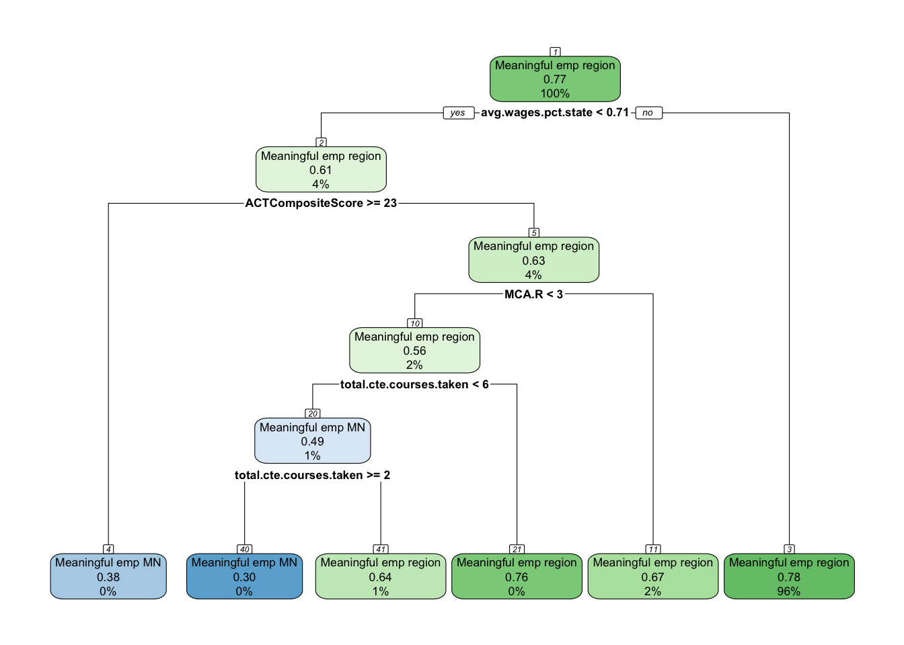
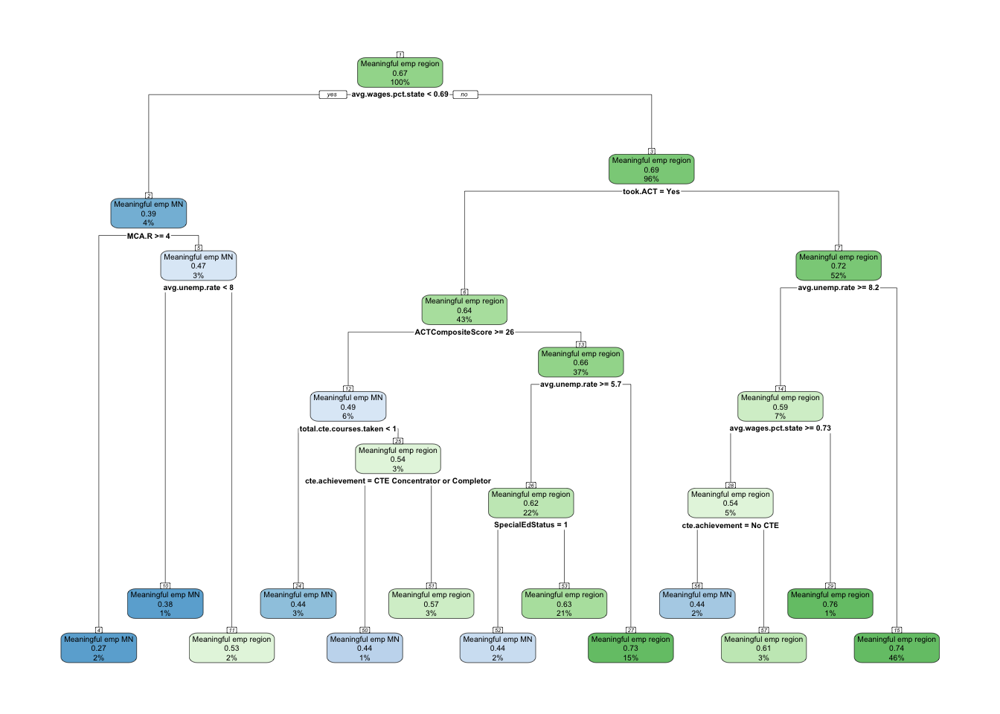
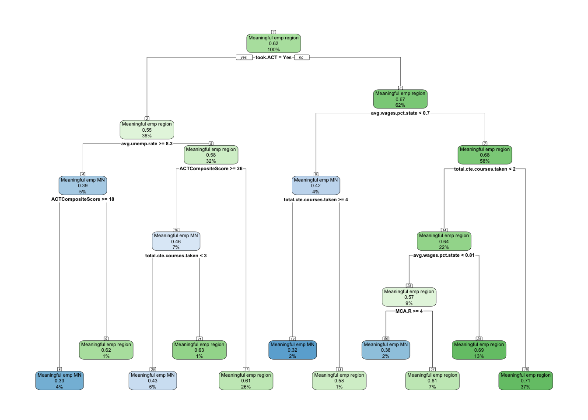
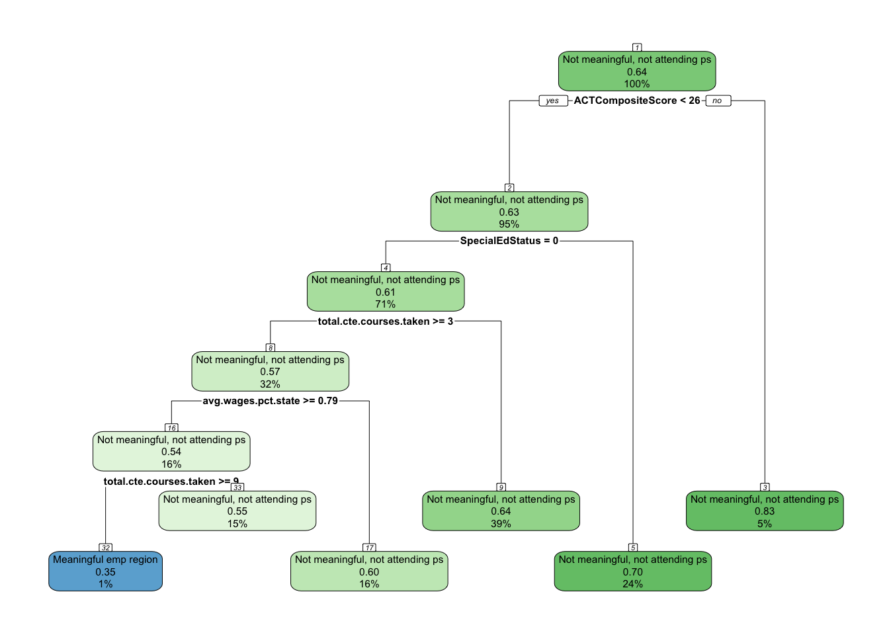
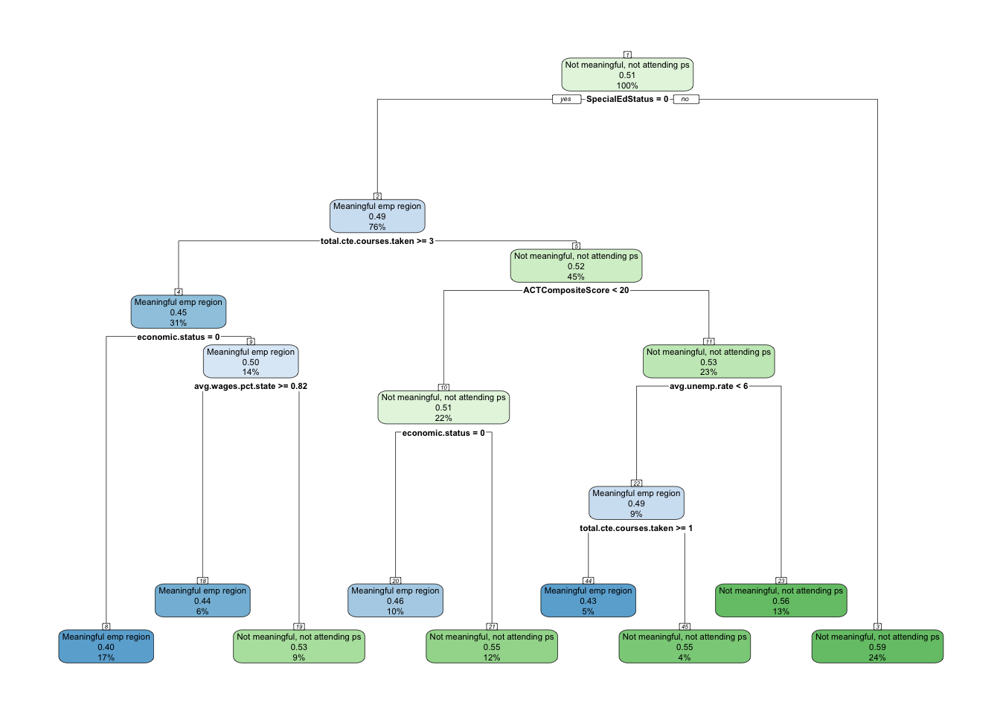
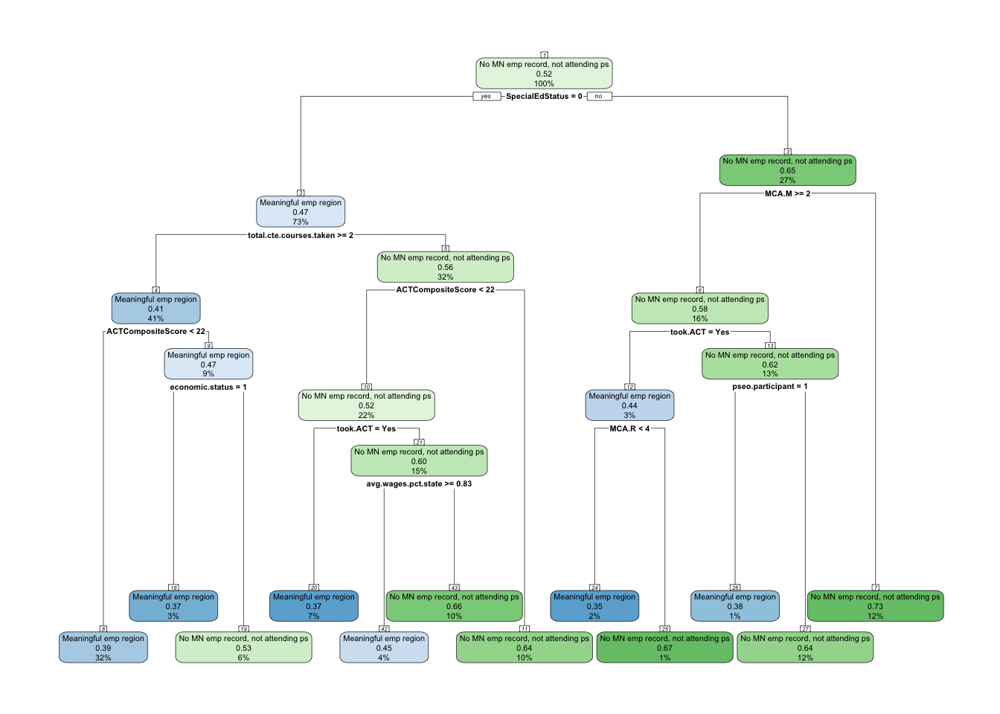
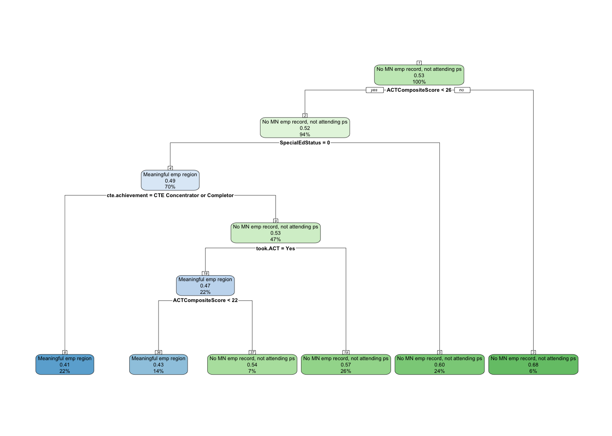
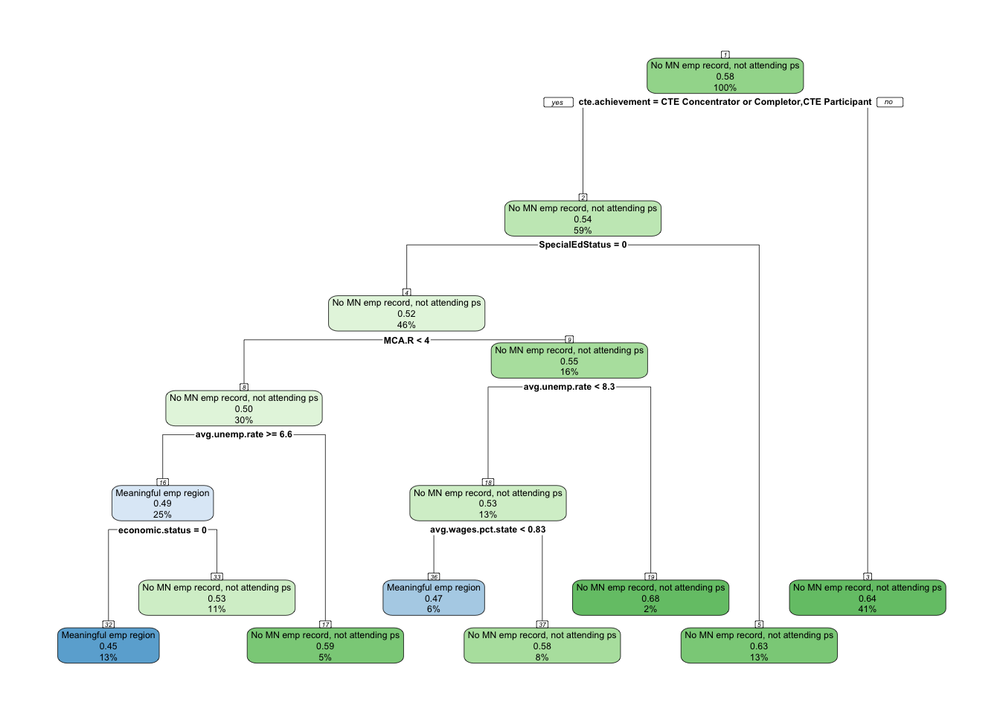

One of the aspects noticed during analysis is the percentage of individuals that never graduated college that also had meaningful employment in the region. The table below shows that 54% of the high school graduates in Southern Minnesota never graduated college.
We are going to examine, more closely, this 54% of the population and see if there are patterns in which they end up in different employment outcomes 1-, 5- and 10-years after graduating high school.
Employment outcomes distribution
The following tables provide the percentage of non-college graduates that were categorized in the various employment outcomes at 1-, 5-, and 10-years after graduating high school.
Distribution of Employment Outcomes for Non-College Graduates
Key Findings
At 1-year after graduation, non-college grads are widely dispersed across outcomes. The largest share (31.2%) are in not meaningful, not attending postsecondary, followed closely by attending postsecondary (21.8%) and meaningful employment in region (20.4%). A substantial group (19.8%) has no MN employment record.
By 5-years after graduation, the share in meaningful employment in region grows to 30.1%, becoming the single largest group. Meaningful employment in MN (outside region) also rises to 14.1%. Meanwhile, attending postsecondary falls sharply (to 5.1%), and both not meaningful (24.0%) and no MN employment (26.6%) remain substantial.
At 10-years after graduation, regional meaningful employment is still the largest category (30.6%), while meaningful employment in MN (outside region) continues to grow (16.6%). The proportion with no MN employment record increases to its highest level (34.0%), while not meaningful employment shrinks (18.7%).
Interpretation Over Time
Immediately after high school, many non-college grads are either in low-quality employment or still engaged in postsecondary activity. Over the medium term (5 years), the transition away from postsecondary and into the workforce is clear, with meaningful employment in the region gaining prominence. By 10 years, regional employment remains stable, but there is a clear shift toward greater geographic mobility (meaningful employment in MN outside region) and a steady rise in the share leaving the state or the formal workforce (no MN employment record). Importantly, the group in not meaningful employment shrinks over time, suggesting improvement in employment quality among those who stay in the labor market.
Conclusion
For non-college grads, the early years are characterized by instability and disconnection. By 5 years out, many transition into stable, meaningful employment, especially in the region. However, by 10 years, the rise of out-of-region employment and the growing proportion with no Minnesota employment record point toward greater mobility and possible outmigration. Overall, regional meaningful employment remains the single largest and most stable outcome across time, but the pathway diverges into mobility or disengagement as time progresses.
This analysis is going to focus on that 54% of the graduates, and explore relationships and patterns of the portion of this population that found meaningful employment in the region vs. other employment outcomes.
Methodology
The above tables show the importance of understanding how non-college grads are navigating their post-high school pathways with a significant portion of them being disconnected from the regional workforce. To better understand these pathways, we will explore the relationships between independent variables (Demographic, High school characteristics, and High school accomplishments) along with workforce outcomes at 1-, 5- and 10-years after graduating high school.
Since we provided the descriptive statistics above, we now need to analyze which factors relate most strongly to outcomes, and then see if we can use those factors to build a predictive model.
For exploring the relationships we will do the following;
For categorical predictors (e.g., Race/Ethnicity, Economic status, CTE achievement, PSEO participation), use cross-tabs with Cramer’s V and chi-square.
For continuous predictors (e.g., ACT, MCA scores, total CTE courses, county-level variables), use ANOVA to compare means across the employment states.
Run these analyses separately for grad.year.1, grad.year.5, grad.year.10 to see how relationships shift over time.
For building the predictive model, we will do the following;
Identify important predictors
Focus on effect sizes rather than just significance (since large N will make almost everything significant).
Highlight which variables consistently show moderate-to-strong associations with employment outcomes.
These become the candidates for inclusion in CART modeling.
For each year (1, 5, 10), run CART where the dependent variable is a binary comparison with “Meaningful emp region” as the reference:
Meaningful emp region vs. Meaningful emp MN
Meaningful emp region vs. Not meaningful, not attending ps
Meaningful emp region vs. No MN emp record, not attending ps
This will:
Show which factors distinguish students who stay employed meaningfully in their region from those in other outcomes.
Provide clear decision rules (e.g., “Non-college grads with high ACT scores and PSEO experience are far more likely to achieve meaningful regional employment.”).
Feed directly into actionable insights for policymakers.
Independent variables
We are going to continue using the variables that we have used throughout this project.
High school characteristics:Dem_Desc, avg.unemp.rate, avg.wages.pct.state
High school accomplishments:pseo.participant, cte.achievement, total.cte.courses.taken, ACTCompositeScore, MCA.M, MCA.R, MCA.S
Relationships
We will first explore the relationships between the independent variables and the 1-, 5- and 10-year outcomes.
Demographics
Grand Synthesis: Demographic Variables and Employment Pathways of Non-College Graduates
Key Findings
Economic Status: The strongest and most consistent demographic factor. At 1 year, low-income students are notably less likely to be in meaningful employment in the region (Cramer’s V = 0.115, p < .001). While disparities weaken at 5 and 10 years, gaps in regional meaningful employment remain.
Special Education Status: Also a strong differentiator. At 1 year, students with special education needs are substantially less likely to achieve meaningful regional employment (Cramer’s V = 0.176, p < .001). Although the association weakens over time, regional employment gaps persist through year 10.
Gender: Displays a modest but consistent influence. Males are more likely to secure meaningful employment in the region, with gaps narrowing at 5 years but re-emerging by 10 years (Cramer’s V ≈ 0.06–0.08, p < .001).
Race/Ethnicity: Shows a small but persistent association (Cramer’s V ≈ 0.05, p < .001). White students are more likely to be in meaningful regional employment, while students of color are more often in weaker outcomes. The disparity remains stable over time.
Interpretation Over Time
Demographic influences are strongest at 1 year after high school, when the likelihood of entering meaningful employment in the region is most sharply stratified. Economic disadvantage and special education needs stand out as particularly strong barriers, producing early gaps that never fully close. Gender and race/ethnicity also shape outcomes, though their effects are smaller in magnitude. Over time, all disparities persist, with some evidence of narrowing (economic status, special education) but none disappearing. By 10 years, meaningful regional employment stabilizes at ~30% overall, but disadvantaged groups remain systematically underrepresented.
Conclusion
For non-college graduates, demographics matter most in the early transition into the workforce. Economic disadvantage and special education needs significantly reduce access to meaningful employment in the region, while gender and race/ethnicity exert smaller but still persistent effects. Importantly, disparities do not vanish over time—regional meaningful employment remains an unequal outcome at 1, 5, and 10 years.
Policy Implications
Early Intervention is Critical: Programs supporting disadvantaged students in the first 1–2 years after high school are most likely to reduce long-term disparities in regional meaningful employment.
Target Regional Employment Pipelines: Connecting low-income students, students of color, women, and special education students to local employers and career ladders can address inequities at their source.
Retention and Advancement Strategies: Since gaps persist into the 10-year mark, interventions cannot stop at initial placement—long-term supports are needed to sustain equity in regional employment.
Equity Benchmarking: Meaningful employment in the region should be treated as a key benchmark for equity policy, as it is both the most desirable outcome and the one where disparities are most evident.
RaceEthnicity
Key Findings
At 1-year, race/ethnicity shows a statistically significant but weak association with employment outcomes (p < .001, Cramer’s V = 0.053). Students of color are less likely to be in meaningful employment in the region and more likely in “not meaningful” or “no MN employment record.”
At 5- and 10-years, the association remains significant (p < .001) with nearly identical effect sizes (Cramer’s V ≈ 0.052–0.053). Racial gaps in meaningful regional employment persist over time, though they do not appear to widen.
Interpretation Over Time
While small in magnitude, the disparities are consistent: White non-college grads are more likely to secure meaningful employment in the region, whereas students of color remain more concentrated in weaker outcomes. These gaps remain stable at 5 and 10 years, suggesting persistent but not growing barriers to regional employment access.
Conclusion
Race/ethnicity has a modest but enduring influence on non-college grads’ ability to secure meaningful employment in the region. The disparities do not close over time, underscoring structural barriers that shape access to the regional labor market.
Policy Implications
Equity in regional employment pathways should be a priority, with targeted support for students of color in the early years after high school.
Expanding regional employer partnerships and mentorship opportunities could help address underrepresentation in meaningful regional employment.
Because disparities persist over the long run, policy should focus on dismantling barriers to entry into regional employment, not just early transition supports.
At 1-year, economic status (FRL qualification) has a modest but significant association with employment outcomes (p < .001, Cramer’s V = 0.115). Economically disadvantaged non-college grads are less likely to be in meaningful employment in the region and more likely to be in “not meaningful” or “no MN employment record.”
At 5-years, the association weakens (p < .001, Cramer’s V = 0.079), but disadvantaged students still lag in securing meaningful regional employment, even as overall shares in the region rise.
At 10-years, the association is smaller but still present (p < .001, Cramer’s V = 0.076). While many low-income students improve their outcomes, gaps in regional meaningful employment remain.
Interpretation Over Time
At the 1-year mark, economic disadvantage clearly restricts access to regional meaningful employment, pushing more students into unstable or disconnected pathways. By 5 years, many students—both disadvantaged and not—shift into meaningful regional employment, but disadvantaged students do so at lower rates. By 10 years, meaningful regional employment levels stabilize around 30% overall, yet economically disadvantaged students remain underrepresented in this core category. This suggests that while some catch-up occurs, regional meaningful employment is a persistent challenge for low-income non-college grads.
Conclusion
Economic status strongly shapes the likelihood of securing regional meaningful employment, especially in the critical early transition period. Though the disparities lessen with time, disadvantaged students never reach parity in regional employment outcomes. Regional meaningful employment is thus both the most desirable and most unequal category for this group.
Policy Implications
Focus on regional employment pipelines: Strengthen direct connections between disadvantaged students and regional employers, especially in industries offering long-term stability.
First-job interventions matter: Ensuring that low-income non-college grads enter meaningful regional work within 1–2 years could reduce long-term disparities.
Retention supports: Programs that help disadvantaged workers remain in the region and advance within local employment could help close the persistent 10-year gap.
Policymakers should treat meaningful regional employment as the key equity benchmark for non-college grads, since disparities concentrate in this outcome even more than in overall employment.
At 1-year, special education status shows a moderate association with employment outcomes (p < .001, Cramer’s V = 0.176). Students with special education needs are substantially less likely to be in meaningful employment in the region and more likely to be in “not meaningful” or disconnected categories.
At 5-years, the association remains significant but weaker (p < .001, Cramer’s V = 0.113). Some catch-up occurs, but students with special education needs are still underrepresented in regional meaningful employment.
At 10-years, the association is smaller but persists (p < .001, Cramer’s V = 0.084), indicating that while disparities narrow, a lasting gap remains in access to meaningful regional employment.
Interpretation Over Time
The early transition period is especially difficult for students with special education needs: their entry into regional meaningful employment is notably constrained compared to peers. By 5 years, some improvement is visible, but disparities remain. At 10 years, the gap is smaller yet still present, showing that students with special education needs are consistently less likely to secure meaningful employment in the region across their careers.
Conclusion
Special education status is a strong barrier to meaningful regional employment in the early years after high school, and while the influence diminishes over time, it does not disappear. Students with special education needs remain systematically disadvantaged in achieving stable, meaningful employment in the region.
Policy Implications
Early transition supports are critical: Programs that directly connect special education students to regional employers in their first 1–2 years could help close the largest gap.
Workforce preparation tailored to regional industries may improve long-term outcomes, especially when aligned with local employer needs.
Sustained supports beyond high school are necessary, since disparities in regional employment persist even after 10 years.
Policymakers should view meaningful regional employment as a key equity target for students with special education needs, ensuring both access and retention within the local labor market.
Grand Synthesis: High School Characteristics and Employment Pathways of Non-College Graduates
Key Findings
Dem_Desc (Rural/Urban Context): Shows a small but consistent association with employment outcomes (Cramer’s V ≈ 0.03–0.04, p < .001). Rural graduates are slightly more likely to secure meaningful employment in the region, while urban students are more often in non-MN or non-meaningful outcomes.
Average County Unemployment Rate: A strong differentiator, especially at 1 year (F = 110.8, p < .001). Students from high-unemployment counties are less likely to achieve meaningful regional employment. The effect weakens but remains significant at 5 and 10 years.
Average County Wages (Pct. of State Median): Significant at 1 year (F = 12.3, p < .001) and 5 years (F = 9.8, p < .001), with higher-wage counties modestly increasing access to meaningful regional employment. By 10 years, the association disappears (p = .329).
Interpretation Over Time
High school characteristics tied to place-based economic conditions shape non-college graduates’ employment outcomes, especially in the early years after graduation. Students from rural and higher-wage counties, and those graduating in low-unemployment environments, are more likely to secure meaningful employment in the region. Over time, the influence of county-level wage strength fades, while unemployment context retains a lingering effect even at 10 years. Rural advantages in regional employment are consistent but modest throughout.
Conclusion
High school characteristics exert their strongest influence on regional meaningful employment within the first few years after high school, setting the stage for career trajectories. Economic conditions (county unemployment, wage strength) matter more than rural/urban context, though all three factors shape access to regional employment opportunities. By 10 years, wage context no longer matters, but unemployment and rural-urban patterns continue to leave a modest imprint.
Policy Implications
Place-based supports are critical: students in high-unemployment or lower-wage counties need targeted programs to connect them to regional employment.
Rural strengths can be leveraged: replicating strong employer pipelines in rural areas for urban students may help reduce disparities in regional employment outcomes.
Early career interventions (within 1–5 years) are most impactful, as local wage and unemployment contexts influence outcomes most strongly in this period.
Long-term strategies should focus on strengthening county labor markets themselves, since structural conditions leave lasting imprints even beyond individual differences.
Dem_Desc
Key Findings
At 1-year, rural-urban context shows a statistically significant but weak association with employment outcomes (p < .001, Cramer’s V = 0.035). Rural students are somewhat more likely to enter meaningful employment in the region, while urban students are more represented in postsecondary attendance or non-meaningful categories.
At 5-years, the association remains weak but significant (p < .001, Cramer’s V = 0.038). Rural students retain a stronger presence in regional meaningful employment, though overall disparities remain small.
At 10-years, the association persists at a similarly weak level (p < .001, Cramer’s V = 0.032). Regional meaningful employment continues to lean toward rural students, but the effect is minimal.
Interpretation Over Time
Rural-urban differences in employment outcomes are small but consistent. Students from rural contexts are slightly more likely to anchor in meaningful employment in the region, reflecting stronger ties to local labor markets. Urban students are more likely to disperse into non-MN employment or extended schooling paths, reducing their presence in regional meaningful employment. The overall magnitude of these differences is modest and stable across time.
Conclusion
Rural context modestly increases the likelihood of meaningful regional employment for non-college graduates. The effect is weak in statistical terms but consistent, highlighting a subtle but persistent geographic pattern in labor market attachment.
Policy Implications
Rural advantage in regional employment suggests that local labor market connections are stronger outside urban areas. Policymakers should seek to replicate these pathways for urban graduates who may lack similar networks.
Regional employer partnerships could be expanded in urban and mixed settings to improve access to meaningful regional employment.
Because disparities are small, rural-urban differences should be viewed as complementary to other equity dimensions (economic status, special education, etc.), rather than as a major independent driver of outcomes.
At 1-year, ANOVA results show a strong, statistically significant difference in average county unemployment rates across employment outcomes (F = 110.8, p < .001). Students from higher-unemployment counties are less likely to secure meaningful employment in the region and more likely to be in “not meaningful” or “no MN employment record.”
At 5-years, the association remains significant but weaker (F = 31.2, p < .001). The influence of local unemployment on regional meaningful employment is reduced but still present.
At 10-years, the relationship is significant but further diminished (F = 23.8, p < .001). Local unemployment rates at the time of high school have a lingering, though smaller, effect on employment outcomes.
Interpretation Over Time
County unemployment rates at the time of high school graduation clearly shape early employment outcomes. Students from high-unemployment areas are at an immediate disadvantage in securing meaningful employment in the region, likely reflecting weaker local labor markets. Over time, some graduates compensate by moving, re-entering education, or finding pathways outside their original county, which reduces—but does not erase—the effect. Even after 10 years, the local labor market conditions of one’s high school environment continue to influence the likelihood of regional meaningful employment.
Conclusion
The local economic environment matters: high county unemployment significantly reduces access to meaningful employment in the region for non-college grads, with the strongest effect at 1 year and a persistent but smaller influence through 10 years. While individuals adapt over time, structural disadvantages in local labor markets continue to shape long-term outcomes.
Policy Implications
Place-based strategies are essential: Supporting non-college grads in high-unemployment counties with targeted job placement, apprenticeships, and training linked to local industries could reduce early gaps in regional meaningful employment.
Mobility supports (transportation, housing assistance, job relocation programs) may help students from weaker labor markets access regional employment opportunities elsewhere.
Policymakers should recognize that county-level economic conditions leave long-lasting imprints on employment trajectories, meaning interventions should target both individuals and the structural health of local economies.
data <- master.original %>%filter(grad.year.1!="After 2023") %>%filter(ps.grad =="No")summary <-aov(avg.unemp.rate ~ grad.year.1, data = data)summary
Call:
aov(formula = avg.unemp.rate ~ grad.year.1, data = data)
Terms:
grad.year.1 Residuals
Sum of Squares 406.29 46282.62
Deg. of Freedom 4 23728
Residual standard error: 1.39662
Estimated effects may be unbalanced
anova_df <- broom::tidy(summary)TukeyHSD(summary)
Tukey multiple comparisons of means
95% family-wise confidence level
Fit: aov(formula = avg.unemp.rate ~ grad.year.1, data = data)
$grad.year.1
diff
Meaningful emp MN-Attending ps -0.31118995
Meaningful emp region-Attending ps -0.39130890
No MN emp record, not attending ps-Attending ps -0.28445807
Not meaningful, not attending ps-Attending ps -0.29484472
Meaningful emp region-Meaningful emp MN -0.08011895
No MN emp record, not attending ps-Meaningful emp MN 0.02673188
Not meaningful, not attending ps-Meaningful emp MN 0.01634523
No MN emp record, not attending ps-Meaningful emp region 0.10685083
Not meaningful, not attending ps-Meaningful emp region 0.09646419
Not meaningful, not attending ps-No MN emp record, not attending ps -0.01038665
lwr
Meaningful emp MN-Attending ps -0.43007563
Meaningful emp region-Attending ps -0.47090110
No MN emp record, not attending ps-Attending ps -0.36242604
Not meaningful, not attending ps-Attending ps -0.36480650
Meaningful emp region-Meaningful emp MN -0.19919051
No MN emp record, not attending ps-Meaningful emp MN -0.09126017
Not meaningful, not attending ps-Meaningful emp MN -0.09651649
No MN emp record, not attending ps-Meaningful emp region 0.02859972
Not meaningful, not attending ps-Meaningful emp region 0.02618700
Not meaningful, not attending ps-No MN emp record, not attending ps -0.07881887
upr
Meaningful emp MN-Attending ps -0.19230428
Meaningful emp region-Attending ps -0.31171671
No MN emp record, not attending ps-Attending ps -0.20649010
Not meaningful, not attending ps-Attending ps -0.22488294
Meaningful emp region-Meaningful emp MN 0.03895261
No MN emp record, not attending ps-Meaningful emp MN 0.14472393
Not meaningful, not attending ps-Meaningful emp MN 0.12920696
No MN emp record, not attending ps-Meaningful emp region 0.18510195
Not meaningful, not attending ps-Meaningful emp region 0.16674137
Not meaningful, not attending ps-No MN emp record, not attending ps 0.05804558
p adj
Meaningful emp MN-Attending ps 0.0000000
Meaningful emp region-Attending ps 0.0000000
No MN emp record, not attending ps-Attending ps 0.0000000
Not meaningful, not attending ps-Attending ps 0.0000000
Meaningful emp region-Meaningful emp MN 0.3529806
No MN emp record, not attending ps-Meaningful emp MN 0.9722699
Not meaningful, not attending ps-Meaningful emp MN 0.9948654
No MN emp record, not attending ps-Meaningful emp region 0.0018305
Not meaningful, not attending ps-Meaningful emp region 0.0016974
Not meaningful, not attending ps-No MN emp record, not attending ps 0.9938495
data <- master.original %>%filter(grad.year.5!="After 2023") %>%filter(ps.grad =="No")summary <-aov(avg.unemp.rate ~ grad.year.5, data = data)summary
Call:
aov(formula = avg.unemp.rate ~ grad.year.5, data = data)
Terms:
grad.year.5 Residuals
Sum of Squares 121.97 31694.90
Deg. of Freedom 4 17447
Residual standard error: 1.347828
Estimated effects may be unbalanced
anova_df <- broom::tidy(summary)TukeyHSD(summary)
Tukey multiple comparisons of means
95% family-wise confidence level
Fit: aov(formula = avg.unemp.rate ~ grad.year.5, data = data)
$grad.year.5
diff
Meaningful emp MN-Attending ps 0.02842550
Meaningful emp region-Attending ps -0.19791715
No MN emp record, not attending ps-Attending ps -0.21628426
Not meaningful, not attending ps-Attending ps -0.12813879
Meaningful emp region-Meaningful emp MN -0.22634265
No MN emp record, not attending ps-Meaningful emp MN -0.24470976
Not meaningful, not attending ps-Meaningful emp MN -0.15656429
No MN emp record, not attending ps-Meaningful emp region -0.01836710
Not meaningful, not attending ps-Meaningful emp region 0.06977836
Not meaningful, not attending ps-No MN emp record, not attending ps 0.08814546
lwr
Meaningful emp MN-Attending ps -0.128458532
Meaningful emp region-Attending ps -0.344261801
No MN emp record, not attending ps-Attending ps -0.361484130
Not meaningful, not attending ps-Attending ps -0.274125319
Meaningful emp region-Meaningful emp MN -0.321681403
No MN emp record, not attending ps-Meaningful emp MN -0.338281786
Not meaningful, not attending ps-Meaningful emp MN -0.251352409
No MN emp record, not attending ps-Meaningful emp region -0.092931713
Not meaningful, not attending ps-Meaningful emp region -0.006306745
Not meaningful, not attending ps-No MN emp record, not attending ps 0.014286198
upr
Meaningful emp MN-Attending ps 0.18530953
Meaningful emp region-Attending ps -0.05157250
No MN emp record, not attending ps-Attending ps -0.07108438
Not meaningful, not attending ps-Attending ps 0.01784773
Meaningful emp region-Meaningful emp MN -0.13100390
No MN emp record, not attending ps-Meaningful emp MN -0.15113773
Not meaningful, not attending ps-Meaningful emp MN -0.06177618
No MN emp record, not attending ps-Meaningful emp region 0.05619751
Not meaningful, not attending ps-Meaningful emp region 0.14586347
Not meaningful, not attending ps-No MN emp record, not attending ps 0.16200473
p adj
Meaningful emp MN-Attending ps 0.9879195
Meaningful emp region-Attending ps 0.0021012
No MN emp record, not attending ps-Attending ps 0.0004660
Not meaningful, not attending ps-Attending ps 0.1167658
Meaningful emp region-Meaningful emp MN 0.0000000
No MN emp record, not attending ps-Meaningful emp MN 0.0000000
Not meaningful, not attending ps-Meaningful emp MN 0.0000652
No MN emp record, not attending ps-Meaningful emp region 0.9624458
Not meaningful, not attending ps-Meaningful emp region 0.0901945
Not meaningful, not attending ps-No MN emp record, not attending ps 0.0099819
data <- master.original %>%filter(grad.year.10!="After 2023") %>%filter(ps.grad =="No")summary <-aov(avg.unemp.rate ~ grad.year.10, data = data)summary
Call:
aov(formula = avg.unemp.rate ~ grad.year.10, data = data)
Terms:
grad.year.10 Residuals
Sum of Squares 27.113 12879.555
Deg. of Freedom 3 10078
Residual standard error: 1.130481
Estimated effects may be unbalanced
anova_df <- broom::tidy(summary)TukeyHSD(summary)
Tukey multiple comparisons of means
95% family-wise confidence level
Fit: aov(formula = avg.unemp.rate ~ grad.year.10, data = data)
$grad.year.10
diff
Meaningful emp region-Meaningful emp MN -0.14612881
No MN emp record, not attending ps-Meaningful emp MN -0.13608448
Not meaningful, not attending ps-Meaningful emp MN -0.07611194
No MN emp record, not attending ps-Meaningful emp region 0.01004433
Not meaningful, not attending ps-Meaningful emp region 0.07001687
Not meaningful, not attending ps-No MN emp record, not attending ps 0.05997254
lwr
Meaningful emp region-Meaningful emp MN -0.23909978
No MN emp record, not attending ps-Meaningful emp MN -0.22354464
Not meaningful, not attending ps-Meaningful emp MN -0.17179027
No MN emp record, not attending ps-Meaningful emp region -0.06446338
Not meaningful, not attending ps-Meaningful emp region -0.01398588
Not meaningful, not attending ps-No MN emp record, not attending ps -0.01788722
upr
Meaningful emp region-Meaningful emp MN -0.05315784
No MN emp record, not attending ps-Meaningful emp MN -0.04862431
Not meaningful, not attending ps-Meaningful emp MN 0.01956639
No MN emp record, not attending ps-Meaningful emp region 0.08455205
Not meaningful, not attending ps-Meaningful emp region 0.15401963
Not meaningful, not attending ps-No MN emp record, not attending ps 0.13783230
p adj
Meaningful emp region-Meaningful emp MN 0.0003158
No MN emp record, not attending ps-Meaningful emp MN 0.0003744
Not meaningful, not attending ps-Meaningful emp MN 0.1720103
No MN emp record, not attending ps-Meaningful emp region 0.9857252
Not meaningful, not attending ps-Meaningful emp region 0.1400869
Not meaningful, not attending ps-No MN emp record, not attending ps 0.1958980
At 1-year, ANOVA results show a statistically significant difference across employment outcomes (F = 12.3, p < .001). Students from counties with relatively higher wages are somewhat more likely to enter meaningful employment in the region.
At 5-years, the relationship remains significant though weaker (F = 9.8, p < .001). The local wage environment continues to influence who secures meaningful regional employment, but the effect diminishes.
At 10-years, the association is no longer significant (F = 1.1, p = .329). The impact of local wage levels on employment outcomes fades entirely by this stage.
Interpretation Over Time
Relative county wage levels matter most immediately after high school. Students from stronger wage environments have an advantage in accessing regional meaningful employment early on. By 5 years, the advantage persists but at a lower magnitude, as individuals adapt and gain experience. By 10 years, the effect disappears—suggesting that personal career trajectories and broader mobility overshadow initial local wage contexts.
Conclusion
Local wage environments play a role in shaping early access to meaningful regional employment but do not have lasting effects. By 10 years, outcomes for non-college grads are no longer tied to the relative wage strength of their high school county.
Policy Implications
Boosting wage environments locally—through industry development and employer partnerships—can support early transitions into meaningful regional employment.
Bridging supports in lower-wage counties (internships, job placement, wage supplements) may help offset disadvantages in the first 5 years.
Since effects vanish by 10 years, policies should prioritize the early career window when wage context matters most for anchoring graduates into regional employment.
data <- master.original %>%filter(grad.year.1!="After 2023") %>%filter(ps.grad =="No")summary <-aov(avg.wages.pct.state ~ grad.year.1, data = data)summary
Call:
aov(formula = avg.wages.pct.state ~ grad.year.1, data = data)
Terms:
grad.year.1 Residuals
Sum of Squares 0.15695 64.16392
Deg. of Freedom 4 23728
Residual standard error: 0.05200138
Estimated effects may be unbalanced
anova_df <- broom::tidy(summary)TukeyHSD(summary)
Tukey multiple comparisons of means
95% family-wise confidence level
Fit: aov(formula = avg.wages.pct.state ~ grad.year.1, data = data)
$grad.year.1
diff
Meaningful emp MN-Attending ps -1.220490e-02
Meaningful emp region-Attending ps -2.078207e-03
No MN emp record, not attending ps-Attending ps -3.009707e-03
Not meaningful, not attending ps-Attending ps -2.040741e-03
Meaningful emp region-Meaningful emp MN 1.012669e-02
No MN emp record, not attending ps-Meaningful emp MN 9.195193e-03
Not meaningful, not attending ps-Meaningful emp MN 1.016416e-02
No MN emp record, not attending ps-Meaningful emp region -9.314997e-04
Not meaningful, not attending ps-Meaningful emp region 3.746607e-05
Not meaningful, not attending ps-No MN emp record, not attending ps 9.689658e-04
lwr
Meaningful emp MN-Attending ps -0.016631456
Meaningful emp region-Attending ps -0.005041721
No MN emp record, not attending ps-Attending ps -0.005912745
Not meaningful, not attending ps-Attending ps -0.004645679
Meaningful emp region-Meaningful emp MN 0.005693215
No MN emp record, not attending ps-Meaningful emp MN 0.004801910
Not meaningful, not attending ps-Meaningful emp MN 0.005961897
No MN emp record, not attending ps-Meaningful emp region -0.003845080
Not meaningful, not attending ps-Meaningful emp region -0.002579215
Not meaningful, not attending ps-No MN emp record, not attending ps -0.001579021
upr
Meaningful emp MN-Attending ps -0.0077783432
Meaningful emp region-Attending ps 0.0008853072
No MN emp record, not attending ps-Attending ps -0.0001066686
Not meaningful, not attending ps-Attending ps 0.0005641969
Meaningful emp region-Meaningful emp MN 0.0145601707
No MN emp record, not attending ps-Meaningful emp MN 0.0135884766
Not meaningful, not attending ps-Meaningful emp MN 0.0143664214
No MN emp record, not attending ps-Meaningful emp region 0.0019820808
Not meaningful, not attending ps-Meaningful emp region 0.0026541476
Not meaningful, not attending ps-No MN emp record, not attending ps 0.0035169524
p adj
Meaningful emp MN-Attending ps 0.0000000
Meaningful emp region-Attending ps 0.3102689
No MN emp record, not attending ps-Attending ps 0.0377439
Not meaningful, not attending ps-Attending ps 0.2043469
Meaningful emp region-Meaningful emp MN 0.0000000
No MN emp record, not attending ps-Meaningful emp MN 0.0000000
Not meaningful, not attending ps-Meaningful emp MN 0.0000000
No MN emp record, not attending ps-Meaningful emp region 0.9071625
Not meaningful, not attending ps-Meaningful emp region 0.9999995
Not meaningful, not attending ps-No MN emp record, not attending ps 0.8380101
data <- master.original %>%filter(grad.year.5!="After 2023") %>%filter(ps.grad =="No")summary <-aov(avg.wages.pct.state ~ grad.year.5, data = data)summary
Call:
aov(formula = avg.wages.pct.state ~ grad.year.5, data = data)
Terms:
grad.year.5 Residuals
Sum of Squares 0.20888 56.04140
Deg. of Freedom 4 17447
Residual standard error: 0.05667533
Estimated effects may be unbalanced
anova_df <- broom::tidy(summary)TukeyHSD(summary)
Tukey multiple comparisons of means
95% family-wise confidence level
Fit: aov(formula = avg.wages.pct.state ~ grad.year.5, data = data)
$grad.year.5
diff
Meaningful emp MN-Attending ps -0.0135980060
Meaningful emp region-Attending ps -0.0025326668
No MN emp record, not attending ps-Attending ps -0.0048149817
Not meaningful, not attending ps-Attending ps -0.0056015401
Meaningful emp region-Meaningful emp MN 0.0110653392
No MN emp record, not attending ps-Meaningful emp MN 0.0087830242
Not meaningful, not attending ps-Meaningful emp MN 0.0079964659
No MN emp record, not attending ps-Meaningful emp region -0.0022823150
Not meaningful, not attending ps-Meaningful emp region -0.0030688733
Not meaningful, not attending ps-No MN emp record, not attending ps -0.0007865584
lwr
Meaningful emp MN-Attending ps -0.020194885
Meaningful emp region-Attending ps -0.008686371
No MN emp record, not attending ps-Attending ps -0.010920549
Not meaningful, not attending ps-Attending ps -0.011740185
Meaningful emp region-Meaningful emp MN 0.007056402
No MN emp record, not attending ps-Meaningful emp MN 0.004848377
Not meaningful, not attending ps-Meaningful emp MN 0.004010683
No MN emp record, not attending ps-Meaningful emp region -0.005417712
Not meaningful, not attending ps-Meaningful emp region -0.006268206
Not meaningful, not attending ps-No MN emp record, not attending ps -0.003892296
upr
Meaningful emp MN-Attending ps -0.0070011274
Meaningful emp region-Attending ps 0.0036210371
No MN emp record, not attending ps-Attending ps 0.0012905851
Not meaningful, not attending ps-Attending ps 0.0005371049
Meaningful emp region-Meaningful emp MN 0.0150742759
No MN emp record, not attending ps-Meaningful emp MN 0.0127176715
Not meaningful, not attending ps-Meaningful emp MN 0.0119822488
No MN emp record, not attending ps-Meaningful emp region 0.0008530818
Not meaningful, not attending ps-Meaningful emp region 0.0001304593
Not meaningful, not attending ps-No MN emp record, not attending ps 0.0023191790
p adj
Meaningful emp MN-Attending ps 0.0000002
Meaningful emp region-Attending ps 0.7945624
No MN emp record, not attending ps-Attending ps 0.1985559
Not meaningful, not attending ps-Attending ps 0.0930291
Meaningful emp region-Meaningful emp MN 0.0000000
No MN emp record, not attending ps-Meaningful emp MN 0.0000000
Not meaningful, not attending ps-Meaningful emp MN 0.0000005
No MN emp record, not attending ps-Meaningful emp region 0.2728982
Not meaningful, not attending ps-Meaningful emp region 0.0673564
Not meaningful, not attending ps-No MN emp record, not attending ps 0.9585195
data <- master.original %>%filter(grad.year.10!="After 2023") %>%filter(ps.grad =="No")summary <-aov(avg.wages.pct.state ~ grad.year.10, data = data)summary
Call:
aov(formula = avg.wages.pct.state ~ grad.year.10, data = data)
Terms:
grad.year.10 Residuals
Sum of Squares 0.07494 38.45830
Deg. of Freedom 3 10078
Residual standard error: 0.0617743
Estimated effects may be unbalanced
anova_df <- broom::tidy(summary)TukeyHSD(summary)
Tukey multiple comparisons of means
95% family-wise confidence level
Fit: aov(formula = avg.wages.pct.state ~ grad.year.10, data = data)
$grad.year.10
diff
Meaningful emp region-Meaningful emp MN 0.008278926
No MN emp record, not attending ps-Meaningful emp MN 0.007147266
Not meaningful, not attending ps-Meaningful emp MN 0.005764674
No MN emp record, not attending ps-Meaningful emp region -0.001131660
Not meaningful, not attending ps-Meaningful emp region -0.002514251
Not meaningful, not attending ps-No MN emp record, not attending ps -0.001382591
lwr
Meaningful emp region-Meaningful emp MN 0.0031985953
No MN emp record, not attending ps-Meaningful emp MN 0.0023680694
Not meaningful, not attending ps-Meaningful emp MN 0.0005364024
No MN emp record, not attending ps-Meaningful emp region -0.0052030792
Not meaningful, not attending ps-Meaningful emp region -0.0071045198
Not meaningful, not attending ps-No MN emp record, not attending ps -0.0056371808
upr
Meaningful emp region-Meaningful emp MN 0.013359256
No MN emp record, not attending ps-Meaningful emp MN 0.011926462
Not meaningful, not attending ps-Meaningful emp MN 0.010992947
No MN emp record, not attending ps-Meaningful emp region 0.002939760
Not meaningful, not attending ps-Meaningful emp region 0.002076018
Not meaningful, not attending ps-No MN emp record, not attending ps 0.002871998
p adj
Meaningful emp region-Meaningful emp MN 0.0001670
No MN emp record, not attending ps-Meaningful emp MN 0.0007071
Not meaningful, not attending ps-Meaningful emp MN 0.0238951
No MN emp record, not attending ps-Meaningful emp region 0.8915102
Not meaningful, not attending ps-Meaningful emp region 0.4946860
Not meaningful, not attending ps-No MN emp record, not attending ps 0.8378243
Grand Synthesis: High School Accomplishments and Employment Pathways of Non-College Graduates
Key Findings
PSEO Participation: Associated with a modest advantage in meaningful regional employment, strongest at 1 year (Cramer’s V = 0.122, p < .001) and persisting at smaller levels through 10 years. PSEO participants consistently show slightly better outcomes in regional employment.
CTE Achievement: A durable predictor. CTE concentrators/completors are more likely to secure meaningful regional employment, with associations stable across 1, 5, and 10 years (Cramer’s V ≈ 0.09–0.10, p < .001).
Number of CTE Courses Taken: Strong, graded relationship. More CTE courses predict greater likelihood of meaningful regional employment at 1 year (F = 261.1, p < .001), 5 years (F = 183.0, p < .001), and 10 years (F = 93.6, p < .001). Depth of CTE engagement matters.
ACT Composite Score: Strong academic predictor, with significant associations at 1 year (F = 264.3, p < .001), 5 years (F = 111.2, p < .001), and 10 years (F = 56.4, p < .001). Influence declines but persists.
MCA Math: Highly significant predictor, strong at 1 year (F = 132.0, p < .001), still meaningful at 5 and 10 years. Math achievement is one of the most durable academic indicators of regional employment success.
MCA Reading: Strong early predictor (F = 252.8, p < .001 at 1 year), with effects diminishing but still significant at 10 years. Reading skills contribute to both early access and long-term retention in regional employment.
MCA Science: Also a significant predictor across time (F = 170.8 at 1 year; F = 38.8 at 10 years, p < .001). Science achievement provides lasting though weaker advantages in securing regional employment.
Interpretation Over Time
High school accomplishments shape non-college graduates’ ability to access meaningful employment in the region, with two main pathways:
Career and Technical Preparation (CTE participation, achievement, depth of coursework) provides strong and persistent advantages in regional employment, underscoring the role of applied learning and employer-aligned skills.
Academic Achievement (ACT, MCA scores) strongly predicts early success in regional employment, with math and reading especially durable predictors. While the influence declines over time, academic readiness continues to matter even at 10 years.
PSEO provides a smaller but consistent edge, reinforcing the value of early exposure to postsecondary environments. Together, these accomplishments demonstrate that both technical and academic readiness matter, with technical pathways offering stability and academic skills providing broader adaptability.
Conclusion
High school accomplishments are among the strongest predictors of meaningful regional employment for non-college graduates. CTE participation and depth of coursework offer consistent, long-term benefits, while strong academic performance—especially in math and reading—provides additional advantages. These findings highlight the importance of balancing academic rigor with career and technical preparation in shaping equitable employment pathways.
Policy Implications
Expand CTE programs and encourage depth of participation, as they are the most reliable foundation for long-term regional employment success.
Strengthen academic preparation in math and reading, even for non-college bound students, since these skills retain predictive power well into adulthood.
Promote PSEO participation as a supplemental strategy, particularly for students unlikely to pursue higher education, to provide exposure and readiness benefits.
Policymakers should view high school accomplishments as central levers for workforce equity, ensuring disadvantaged students have access to both strong CTE programs and robust academic preparation.
pseo.participant
Key Findings
At 1-year, participation in PSEO has a modest but significant association with employment outcomes (p < .001, Cramer’s V = 0.122). PSEO participants are more likely to be in meaningful employment in the region compared to non-participants.
At 5-years, the relationship weakens but remains significant (p < .001, Cramer’s V = 0.052). The regional employment advantage for PSEO participants narrows, though it does not disappear.
At 10-years, the association is still small but significant (p < .001, Cramer’s V = 0.059). Participants retain a slight edge in meaningful regional employment.
Interpretation Over Time
PSEO participation provides an early boost into meaningful regional employment, suggesting that exposure to postsecondary opportunities in high school strengthens labor market readiness or regional ties. While the size of the effect decreases after 1 year, the advantage does not fade entirely—participants maintain a small but persistent edge in regional employment even after 10 years. This pattern indicates that early academic enrichment has lasting though limited influence on career pathways for non-college grads.
Conclusion
PSEO participation is associated with a higher likelihood of meaningful regional employment, particularly in the short term. Although the strength of the relationship declines over time, the long-run effect remains statistically detectable.
Policy Implications
Expand access to PSEO for non-college bound students, as it appears to support stronger transitions into meaningful regional employment.
Leverage PSEO as a workforce readiness tool, not only as a pathway into higher education, by connecting participants with local employers.
Since the effect persists at 10 years, PSEO could be framed as an early intervention strategy to improve long-term employment stability among non-college graduates.
At 1-year, CTE achievement has a modest but significant association with employment outcomes (p < .001, Cramer’s V = 0.096). CTE concentrators/completors are more likely to secure meaningful employment in the region than non-CTE peers.
At 5-years, the relationship remains almost identical in strength (p < .001, Cramer’s V = 0.095). The regional employment advantage for CTE students persists steadily.
At 10-years, the association remains significant but slightly weaker (p < .001, Cramer’s V = 0.088). CTE concentrators/completors continue to show higher presence in meaningful regional employment.
Interpretation Over Time
CTE achievement consistently supports entry into meaningful employment in the region. Unlike some other high school characteristics where effects diminish quickly, CTE’s association with regional employment is remarkably stable over 1, 5, and 10 years. This suggests that CTE programs build durable workforce skills and regional employer connections that extend well beyond the immediate transition from high school.
Conclusion
CTE achievement is one of the most reliable predictors of regional meaningful employment among non-college graduates. The advantage it provides does not fade over time, making it a long-term asset in shaping stable regional employment pathways.
Policy Implications
Strengthen and expand CTE pathways as a proven mechanism for boosting meaningful regional employment among non-college grads.
Deepen employer partnerships tied to CTE programs to reinforce the long-term advantage observed in regional employment outcomes.
Since effects remain significant even at 10 years, CTE should be positioned as a cornerstone of workforce development policy for students unlikely to pursue higher education.
At 1-year, ANOVA shows a strong and highly significant relationship between the number of CTE courses taken and employment outcomes (F = 261.1, p < .001). Students who took more CTE courses are more likely to be in meaningful employment in the region.
At 5-years, the relationship remains strong (F = 183.0, p < .001). The number of CTE courses continues to predict higher rates of meaningful regional employment.
At 10-years, the relationship is still significant (F = 93.6, p < .001), though weaker than at earlier stages. The effect persists, showing that greater CTE exposure contributes to long-term regional employment stability.
Interpretation Over Time
The number of CTE courses taken is a powerful predictor of regional employment success, especially in the first 5 years after high school. While the strength of the association declines by 10 years, it remains significant, suggesting that CTE course-taking equips students with durable skills and networks that carry into mid-career. The findings reinforce that not just CTE participation, but depth of involvement in CTE matters for achieving meaningful regional employment.
Conclusion
A higher number of CTE courses taken is consistently linked with greater likelihood of meaningful employment in the region, making it one of the strongest high school accomplishment predictors for non-college grads. The effect is strongest in the early years but still evident even a decade after graduation.
Policy Implications
Encourage greater CTE course-taking, not just participation, as deeper engagement provides stronger and more lasting advantages in regional employment.
Align CTE curricula with regional labor market needs, ensuring that course sequences translate into meaningful employment pathways.
Support equitable access to multiple CTE courses, especially for students from disadvantaged backgrounds, to close gaps in regional employment opportunities.
data <- master.original %>%filter(grad.year.1!="After 2023") %>%filter(ps.grad =="No")summary <-aov(total.cte.courses.taken ~ grad.year.1, data = data)summary
Call:
aov(formula = total.cte.courses.taken ~ grad.year.1, data = data)
Terms:
grad.year.1 Residuals
Sum of Squares 1613.61 148725.16
Deg. of Freedom 4 23728
Residual standard error: 2.503581
Estimated effects may be unbalanced
anova_df <- broom::tidy(summary)TukeyHSD(summary)
Tukey multiple comparisons of means
95% family-wise confidence level
Fit: aov(formula = total.cte.courses.taken ~ grad.year.1, data = data)
$grad.year.1
diff
Meaningful emp MN-Attending ps 0.71902126
Meaningful emp region-Attending ps 0.68882683
No MN emp record, not attending ps-Attending ps 0.06538514
Not meaningful, not attending ps-Attending ps 0.24449615
Meaningful emp region-Meaningful emp MN -0.03019443
No MN emp record, not attending ps-Meaningful emp MN -0.65363612
Not meaningful, not attending ps-Meaningful emp MN -0.47452511
No MN emp record, not attending ps-Meaningful emp region -0.62344169
Not meaningful, not attending ps-Meaningful emp region -0.44433069
Not meaningful, not attending ps-No MN emp record, not attending ps 0.17911101
lwr
Meaningful emp MN-Attending ps 0.50590686
Meaningful emp region-Attending ps 0.54614990
No MN emp record, not attending ps-Attending ps -0.07438020
Not meaningful, not attending ps-Attending ps 0.11908270
Meaningful emp region-Meaningful emp MN -0.24364204
No MN emp record, not attending ps-Meaningful emp MN -0.86514859
Not meaningful, not attending ps-Meaningful emp MN -0.67684098
No MN emp record, not attending ps-Meaningful emp region -0.76371460
Not meaningful, not attending ps-Meaningful emp region -0.57030953
Not meaningful, not attending ps-No MN emp record, not attending ps 0.05643944
upr
Meaningful emp MN-Attending ps 0.9321357
Meaningful emp region-Attending ps 0.8315038
No MN emp record, not attending ps-Attending ps 0.2051505
Not meaningful, not attending ps-Attending ps 0.3699096
Meaningful emp region-Meaningful emp MN 0.1832532
No MN emp record, not attending ps-Meaningful emp MN -0.4421236
Not meaningful, not attending ps-Meaningful emp MN -0.2722092
No MN emp record, not attending ps-Meaningful emp region -0.4831688
Not meaningful, not attending ps-Meaningful emp region -0.3183518
Not meaningful, not attending ps-No MN emp record, not attending ps 0.3017826
p adj
Meaningful emp MN-Attending ps 0.0000000
Meaningful emp region-Attending ps 0.0000000
No MN emp record, not attending ps-Attending ps 0.7059230
Not meaningful, not attending ps-Attending ps 0.0000007
Meaningful emp region-Meaningful emp MN 0.9953107
No MN emp record, not attending ps-Meaningful emp MN 0.0000000
Not meaningful, not attending ps-Meaningful emp MN 0.0000000
No MN emp record, not attending ps-Meaningful emp region 0.0000000
Not meaningful, not attending ps-Meaningful emp region 0.0000000
Not meaningful, not attending ps-No MN emp record, not attending ps 0.0006514
data <- master.original %>%filter(grad.year.5!="After 2023") %>%filter(ps.grad =="No")summary <-aov(total.cte.courses.taken ~ grad.year.5, data = data)summary
Call:
aov(formula = total.cte.courses.taken ~ grad.year.5, data = data)
Terms:
grad.year.5 Residuals
Sum of Squares 688.92 98388.49
Deg. of Freedom 4 17447
Residual standard error: 2.374716
Estimated effects may be unbalanced
anova_df <- broom::tidy(summary)TukeyHSD(summary)
Tukey multiple comparisons of means
95% family-wise confidence level
Fit: aov(formula = total.cte.courses.taken ~ grad.year.5, data = data)
$grad.year.5
diff
Meaningful emp MN-Attending ps 0.40295829
Meaningful emp region-Attending ps 0.64156912
No MN emp record, not attending ps-Attending ps 0.15135524
Not meaningful, not attending ps-Attending ps 0.34507416
Meaningful emp region-Meaningful emp MN 0.23861083
No MN emp record, not attending ps-Meaningful emp MN -0.25160305
Not meaningful, not attending ps-Meaningful emp MN -0.05788414
No MN emp record, not attending ps-Meaningful emp region -0.49021388
Not meaningful, not attending ps-Meaningful emp region -0.29649496
Not meaningful, not attending ps-No MN emp record, not attending ps 0.19371891
lwr
Meaningful emp MN-Attending ps 0.12654676
Meaningful emp region-Attending ps 0.38372676
No MN emp record, not attending ps-Attending ps -0.10447016
Not meaningful, not attending ps-Attending ps 0.08786277
Meaningful emp region-Meaningful emp MN 0.07063497
No MN emp record, not attending ps-Meaningful emp MN -0.41646616
Not meaningful, not attending ps-Meaningful emp MN -0.22488984
No MN emp record, not attending ps-Meaningful emp region -0.62158811
Not meaningful, not attending ps-Meaningful emp region -0.43054813
Not meaningful, not attending ps-No MN emp record, not attending ps 0.06358743
upr
Meaningful emp MN-Attending ps 0.67936983
Meaningful emp region-Attending ps 0.89941148
No MN emp record, not attending ps-Attending ps 0.40718064
Not meaningful, not attending ps-Attending ps 0.60228554
Meaningful emp region-Meaningful emp MN 0.40658669
No MN emp record, not attending ps-Meaningful emp MN -0.08673995
Not meaningful, not attending ps-Meaningful emp MN 0.10912157
No MN emp record, not attending ps-Meaningful emp region -0.35883965
Not meaningful, not attending ps-Meaningful emp region -0.16244180
Not meaningful, not attending ps-No MN emp record, not attending ps 0.32385040
p adj
Meaningful emp MN-Attending ps 0.0006690
Meaningful emp region-Attending ps 0.0000000
No MN emp record, not attending ps-Attending ps 0.4883191
Not meaningful, not attending ps-Attending ps 0.0023511
Meaningful emp region-Meaningful emp MN 0.0010132
No MN emp record, not attending ps-Meaningful emp MN 0.0003043
Not meaningful, not attending ps-Meaningful emp MN 0.8790321
No MN emp record, not attending ps-Meaningful emp region 0.0000000
Not meaningful, not attending ps-Meaningful emp region 0.0000000
Not meaningful, not attending ps-No MN emp record, not attending ps 0.0004710
data <- master.original %>%filter(grad.year.10!="After 2023") %>%filter(ps.grad =="No")summary <-aov(total.cte.courses.taken ~ grad.year.10, data = data)summary
Call:
aov(formula = total.cte.courses.taken ~ grad.year.10, data = data)
Terms:
grad.year.10 Residuals
Sum of Squares 269.1 54787.8
Deg. of Freedom 3 10078
Residual standard error: 2.331604
Estimated effects may be unbalanced
anova_df <- broom::tidy(summary)TukeyHSD(summary)
Tukey multiple comparisons of means
95% family-wise confidence level
Fit: aov(formula = total.cte.courses.taken ~ grad.year.10, data = data)
$grad.year.10
diff
Meaningful emp region-Meaningful emp MN 0.15750346
No MN emp record, not attending ps-Meaningful emp MN -0.25519161
Not meaningful, not attending ps-Meaningful emp MN -0.04480166
No MN emp record, not attending ps-Meaningful emp region -0.41269507
Not meaningful, not attending ps-Meaningful emp region -0.20230512
Not meaningful, not attending ps-No MN emp record, not attending ps 0.21038995
lwr
Meaningful emp region-Meaningful emp MN -0.03424808
No MN emp record, not attending ps-Meaningful emp MN -0.43557718
Not meaningful, not attending ps-Meaningful emp MN -0.24213710
No MN emp record, not attending ps-Meaningful emp region -0.56636637
Not meaningful, not attending ps-Meaningful emp region -0.37555982
Not meaningful, not attending ps-No MN emp record, not attending ps 0.04980510
upr
Meaningful emp region-Meaningful emp MN 0.34925500
No MN emp record, not attending ps-Meaningful emp MN -0.07480604
Not meaningful, not attending ps-Meaningful emp MN 0.15253378
No MN emp record, not attending ps-Meaningful emp region -0.25902377
Not meaningful, not attending ps-Meaningful emp region -0.02905042
Not meaningful, not attending ps-No MN emp record, not attending ps 0.37097480
p adj
Meaningful emp region-Meaningful emp MN 0.1497421
No MN emp record, not attending ps-Meaningful emp MN 0.0015911
Not meaningful, not attending ps-Meaningful emp MN 0.9371285
No MN emp record, not attending ps-Meaningful emp region 0.0000000
Not meaningful, not attending ps-Meaningful emp region 0.0143759
Not meaningful, not attending ps-No MN emp record, not attending ps 0.0042542
At 1-year, ANOVA shows a strong, highly significant association between ACT Composite Score and employment outcomes (F = 264.3, p < .001). Students with higher ACT scores are more likely to secure meaningful employment in the region.
At 5-years, the relationship remains significant though weaker (F = 111.2, p < .001). ACT scores continue to predict higher rates of meaningful regional employment, but the gap narrows as work experience accumulates.
At 10-years, the association is still statistically significant (F = 56.4, p < .001) but smaller in magnitude. ACT scores retain predictive value, but their impact is less pronounced compared to the early years.
Interpretation Over Time
ACT Composite Scores are a strong predictor of short-term success in meaningful regional employment, suggesting that higher academic readiness provides advantages in accessing stable, local jobs. Over time, however, the predictive power diminishes as factors such as work experience, training, and local labor market conditions exert more influence. By 10 years, ACT still matters, but less so than in the immediate transition out of high school.
Conclusion
ACT scores strongly shape the likelihood of securing meaningful regional employment in the first few years after graduation, but their influence declines with time. While early advantages persist, they are gradually overtaken by other career development factors.
Policy Implications
Career readiness interventions should not rely solely on academic test scores, since long-term outcomes for non-college grads are shaped more by skills and labor market connections than by ACT performance.
Students with lower ACT scores may need targeted early support to secure meaningful regional employment, as they face greater risk of falling into weaker outcomes.
Policymakers should focus on balancing academic and technical pathways, ensuring that students with varied academic profiles can still access strong regional employment opportunities.
data <- master.original %>%filter(grad.year.1!="After 2023") %>%filter(ps.grad =="No")summary <-aov(ACTCompositeScore ~ grad.year.1, data = data)summary
Call:
aov(formula = ACTCompositeScore ~ grad.year.1, data = data)
Terms:
grad.year.1 Residuals
Sum of Squares 4510.21 214616.18
Deg. of Freedom 4 9550
Residual standard error: 4.740559
Estimated effects may be unbalanced
14178 observations deleted due to missingness
anova_df <- broom::tidy(summary)TukeyHSD(summary)
Tukey multiple comparisons of means
95% family-wise confidence level
Fit: aov(formula = ACTCompositeScore ~ grad.year.1, data = data)
$grad.year.1
diff
Meaningful emp MN-Attending ps -1.2630501
Meaningful emp region-Attending ps -1.9425892
No MN emp record, not attending ps-Attending ps -0.1062119
Not meaningful, not attending ps-Attending ps -0.6629004
Meaningful emp region-Meaningful emp MN -0.6795391
No MN emp record, not attending ps-Meaningful emp MN 1.1568382
Not meaningful, not attending ps-Meaningful emp MN 0.6001497
No MN emp record, not attending ps-Meaningful emp region 1.8363774
Not meaningful, not attending ps-Meaningful emp region 1.2796888
Not meaningful, not attending ps-No MN emp record, not attending ps -0.5566886
lwr
Meaningful emp MN-Attending ps -1.880694702
Meaningful emp region-Attending ps -2.344443064
No MN emp record, not attending ps-Attending ps -0.543243132
Not meaningful, not attending ps-Attending ps -0.995557212
Meaningful emp region-Meaningful emp MN -1.329268648
No MN emp record, not attending ps-Meaningful emp MN 0.484782975
Not meaningful, not attending ps-Meaningful emp MN -0.009212689
No MN emp record, not attending ps-Meaningful emp region 1.355066694
Not meaningful, not attending ps-Meaningful emp region 0.890684724
Not meaningful, not attending ps-No MN emp record, not attending ps -0.981934357
upr
Meaningful emp MN-Attending ps -0.64540555
Meaningful emp region-Attending ps -1.54073542
No MN emp record, not attending ps-Attending ps 0.33081937
Not meaningful, not attending ps-Attending ps -0.33024369
Meaningful emp region-Meaningful emp MN -0.02980958
No MN emp record, not attending ps-Meaningful emp MN 1.82889351
Not meaningful, not attending ps-Meaningful emp MN 1.20951204
No MN emp record, not attending ps-Meaningful emp region 2.31768802
Not meaningful, not attending ps-Meaningful emp region 1.66869286
Not meaningful, not attending ps-No MN emp record, not attending ps -0.13144278
p adj
Meaningful emp MN-Attending ps 0.0000002
Meaningful emp region-Attending ps 0.0000000
No MN emp record, not attending ps-Attending ps 0.9642082
Not meaningful, not attending ps-Attending ps 0.0000006
Meaningful emp region-Meaningful emp MN 0.0351338
No MN emp record, not attending ps-Meaningful emp MN 0.0000265
Not meaningful, not attending ps-Meaningful emp MN 0.0559364
No MN emp record, not attending ps-Meaningful emp region 0.0000000
Not meaningful, not attending ps-Meaningful emp region 0.0000000
Not meaningful, not attending ps-No MN emp record, not attending ps 0.0032809
data <- master.original %>%filter(grad.year.5!="After 2023") %>%filter(ps.grad =="No")summary <-aov(ACTCompositeScore ~ grad.year.5, data = data)summary
Call:
aov(formula = ACTCompositeScore ~ grad.year.5, data = data)
Terms:
grad.year.5 Residuals
Sum of Squares 2442.51 156523.00
Deg. of Freedom 4 7265
Residual standard error: 4.641638
Estimated effects may be unbalanced
10182 observations deleted due to missingness
anova_df <- broom::tidy(summary)TukeyHSD(summary)
Tukey multiple comparisons of means
95% family-wise confidence level
Fit: aov(formula = ACTCompositeScore ~ grad.year.5, data = data)
$grad.year.5
diff
Meaningful emp MN-Attending ps -0.7108341
Meaningful emp region-Attending ps -1.7019485
No MN emp record, not attending ps-Attending ps -0.2956568
Not meaningful, not attending ps-Attending ps -1.1780371
Meaningful emp region-Meaningful emp MN -0.9911144
No MN emp record, not attending ps-Meaningful emp MN 0.4151772
Not meaningful, not attending ps-Meaningful emp MN -0.4672031
No MN emp record, not attending ps-Meaningful emp region 1.4062917
Not meaningful, not attending ps-Meaningful emp region 0.5239114
Not meaningful, not attending ps-No MN emp record, not attending ps -0.8823803
lwr
Meaningful emp MN-Attending ps -1.44689931
Meaningful emp region-Attending ps -2.39616723
No MN emp record, not attending ps-Attending ps -0.99349312
Not meaningful, not attending ps-Attending ps -1.87521933
Meaningful emp region-Meaningful emp MN -1.46205062
No MN emp record, not attending ps-Meaningful emp MN -0.06107557
Not meaningful, not attending ps-Meaningful emp MN -0.94249694
No MN emp record, not attending ps-Meaningful emp region 0.99767899
Not meaningful, not attending ps-Meaningful emp region 0.11641677
Not meaningful, not attending ps-No MN emp record, not attending ps -1.29600779
upr
Meaningful emp MN-Attending ps 0.025231176
Meaningful emp region-Attending ps -1.007729789
No MN emp record, not attending ps-Attending ps 0.402179447
Not meaningful, not attending ps-Attending ps -0.480854942
Meaningful emp region-Meaningful emp MN -0.520178268
No MN emp record, not attending ps-Meaningful emp MN 0.891430028
Not meaningful, not attending ps-Meaningful emp MN 0.008090798
No MN emp record, not attending ps-Meaningful emp region 1.814904356
Not meaningful, not attending ps-Meaningful emp region 0.931405984
Not meaningful, not attending ps-No MN emp record, not attending ps -0.468752808
p adj
Meaningful emp MN-Attending ps 0.0642916
Meaningful emp region-Attending ps 0.0000000
No MN emp record, not attending ps-Attending ps 0.7764205
Not meaningful, not attending ps-Attending ps 0.0000402
Meaningful emp region-Meaningful emp MN 0.0000001
No MN emp record, not attending ps-Meaningful emp MN 0.1212607
Not meaningful, not attending ps-Meaningful emp MN 0.0567233
No MN emp record, not attending ps-Meaningful emp region 0.0000000
Not meaningful, not attending ps-Meaningful emp region 0.0041484
Not meaningful, not attending ps-No MN emp record, not attending ps 0.0000001
data <- master.original %>%filter(grad.year.10!="After 2023") %>%filter(ps.grad =="No")summary <-aov(ACTCompositeScore ~ grad.year.10, data = data)summary
Call:
aov(formula = ACTCompositeScore ~ grad.year.10, data = data)
Terms:
grad.year.10 Residuals
Sum of Squares 1043.90 67665.35
Deg. of Freedom 3 3427
Residual standard error: 4.443509
Estimated effects may be unbalanced
6651 observations deleted due to missingness
anova_df <- broom::tidy(summary)TukeyHSD(summary)
Tukey multiple comparisons of means
95% family-wise confidence level
Fit: aov(formula = ACTCompositeScore ~ grad.year.10, data = data)
$grad.year.10
diff
Meaningful emp region-Meaningful emp MN -1.1895689
No MN emp record, not attending ps-Meaningful emp MN -0.2323511
Not meaningful, not attending ps-Meaningful emp MN -1.3090335
No MN emp record, not attending ps-Meaningful emp region 0.9572178
Not meaningful, not attending ps-Meaningful emp region -0.1194646
Not meaningful, not attending ps-No MN emp record, not attending ps -1.0766825
lwr
Meaningful emp region-Meaningful emp MN -1.7634297
No MN emp record, not attending ps-Meaningful emp MN -0.7710217
Not meaningful, not attending ps-Meaningful emp MN -1.9300759
No MN emp record, not attending ps-Meaningful emp region 0.4496294
Not meaningful, not attending ps-Meaningful emp region -0.7137487
Not meaningful, not attending ps-No MN emp record, not attending ps -1.6370603
upr
Meaningful emp region-Meaningful emp MN -0.6157081
No MN emp record, not attending ps-Meaningful emp MN 0.3063195
Not meaningful, not attending ps-Meaningful emp MN -0.6879912
No MN emp record, not attending ps-Meaningful emp region 1.4648063
Not meaningful, not attending ps-Meaningful emp region 0.4748195
Not meaningful, not attending ps-No MN emp record, not attending ps -0.5163046
p adj
Meaningful emp region-Meaningful emp MN 0.0000006
No MN emp record, not attending ps-Meaningful emp MN 0.6842084
Not meaningful, not attending ps-Meaningful emp MN 0.0000004
No MN emp record, not attending ps-Meaningful emp region 0.0000078
Not meaningful, not attending ps-Meaningful emp region 0.9551216
Not meaningful, not attending ps-No MN emp record, not attending ps 0.0000049
At 1-year, MCA Math scores show a strong and highly significant association with employment outcomes (F = 132.0, p < .001). Higher math scores are linked to greater likelihood of meaningful employment in the region.
At 5-years, the relationship remains significant though weaker (F = 58.5, p < .001). Math proficiency continues to support access to regional meaningful employment, but the effect has diminished.
At 10-years, the association is still strong and statistically significant (F = 60.9, p < .001). Math achievement remains a durable predictor of regional employment outcomes even a decade after high school.
Interpretation Over Time
MCA Math performance is one of the most consistent academic predictors of meaningful regional employment for non-college graduates. High scores provide an early advantage in entering stable local jobs, and unlike many other academic measures, the influence persists even into the 10-year mark. While the strength of association decreases after 1 year, math skills continue to shape long-term employability in the regional labor market.
Conclusion
Math achievement, as measured by MCA scores, is a long-term predictor of meaningful regional employment. It provides early labor market advantages and remains influential even after a decade, underscoring the lasting importance of quantitative skills for non-college career pathways.
Policy Implications
Strengthen math proficiency supports in high school, especially for students unlikely to attend college, as it directly enhances long-term regional employability.
Integrate applied math into CTE programs, reinforcing the link between academic skills and workforce readiness.
Since math achievement has enduring effects, policymakers should treat it as a core equity lever, ensuring all students—particularly disadvantaged groups—receive adequate preparation.
data <- master.original %>%filter(grad.year.1!="After 2023") %>%filter(ps.grad =="No")summary <-aov(MCA.M ~ grad.year.1, data = data)summary
Call:
aov(formula = MCA.M ~ grad.year.1, data = data)
Terms:
grad.year.1 Residuals
Sum of Squares 72.845 23963.266
Deg. of Freedom 4 21946
Residual standard error: 1.04495
Estimated effects may be unbalanced
1782 observations deleted due to missingness
anova_df <- broom::tidy(summary)TukeyHSD(summary)
Tukey multiple comparisons of means
95% family-wise confidence level
Fit: aov(formula = MCA.M ~ grad.year.1, data = data)
$grad.year.1
diff
Meaningful emp MN-Attending ps 0.012597338
Meaningful emp region-Attending ps -0.058112327
No MN emp record, not attending ps-Attending ps -0.173913990
Not meaningful, not attending ps-Attending ps -0.048302173
Meaningful emp region-Meaningful emp MN -0.070709665
No MN emp record, not attending ps-Meaningful emp MN -0.186511328
Not meaningful, not attending ps-Meaningful emp MN -0.060899511
No MN emp record, not attending ps-Meaningful emp region -0.115801662
Not meaningful, not attending ps-Meaningful emp region 0.009810154
Not meaningful, not attending ps-No MN emp record, not attending ps 0.125611816
lwr
Meaningful emp MN-Attending ps -0.07748191
Meaningful emp region-Attending ps -0.11828095
No MN emp record, not attending ps-Attending ps -0.23683378
Not meaningful, not attending ps-Attending ps -0.10140714
Meaningful emp region-Meaningful emp MN -0.16095214
No MN emp record, not attending ps-Meaningful emp MN -0.27861095
Not meaningful, not attending ps-Meaningful emp MN -0.14659419
No MN emp record, not attending ps-Meaningful emp region -0.17895491
Not meaningful, not attending ps-Meaningful emp region -0.04357121
Not meaningful, not attending ps-No MN emp record, not attending ps 0.06914761
upr
Meaningful emp MN-Attending ps 0.102676585
Meaningful emp region-Attending ps 0.002056295
No MN emp record, not attending ps-Attending ps -0.110994202
Not meaningful, not attending ps-Attending ps 0.004802793
Meaningful emp region-Meaningful emp MN 0.019532807
No MN emp record, not attending ps-Meaningful emp MN -0.094411706
Not meaningful, not attending ps-Meaningful emp MN 0.024795168
No MN emp record, not attending ps-Meaningful emp region -0.052648414
Not meaningful, not attending ps-Meaningful emp region 0.063191522
Not meaningful, not attending ps-No MN emp record, not attending ps 0.182076027
p adj
Meaningful emp MN-Attending ps 0.9955139
Meaningful emp region-Attending ps 0.0642501
No MN emp record, not attending ps-Attending ps 0.0000000
Not meaningful, not attending ps-Attending ps 0.0948806
Meaningful emp region-Meaningful emp MN 0.2041879
No MN emp record, not attending ps-Meaningful emp MN 0.0000002
Not meaningful, not attending ps-Meaningful emp MN 0.2967884
No MN emp record, not attending ps-Meaningful emp region 0.0000055
Not meaningful, not attending ps-Meaningful emp region 0.9872571
Not meaningful, not attending ps-No MN emp record, not attending ps 0.0000000
data <- master.original %>%filter(grad.year.5!="After 2023") %>%filter(ps.grad =="No")summary <-aov(MCA.M ~ grad.year.5, data = data)summary
Call:
aov(formula = MCA.M ~ grad.year.5, data = data)
Terms:
grad.year.5 Residuals
Sum of Squares 75.626 18308.638
Deg. of Freedom 4 16077
Residual standard error: 1.06715
Estimated effects may be unbalanced
1370 observations deleted due to missingness
anova_df <- broom::tidy(summary)TukeyHSD(summary)
Tukey multiple comparisons of means
95% family-wise confidence level
Fit: aov(formula = MCA.M ~ grad.year.5, data = data)
$grad.year.5
diff
Meaningful emp MN-Attending ps 0.1335781635
Meaningful emp region-Attending ps -0.0084995937
No MN emp record, not attending ps-Attending ps -0.0086868861
Not meaningful, not attending ps-Attending ps -0.0929031025
Meaningful emp region-Meaningful emp MN -0.1420777572
No MN emp record, not attending ps-Meaningful emp MN -0.1422650496
Not meaningful, not attending ps-Meaningful emp MN -0.2264812660
No MN emp record, not attending ps-Meaningful emp region -0.0001872924
Not meaningful, not attending ps-Meaningful emp region -0.0844035088
Not meaningful, not attending ps-No MN emp record, not attending ps -0.0842162164
lwr
Meaningful emp MN-Attending ps 0.007308375
Meaningful emp region-Attending ps -0.126429938
No MN emp record, not attending ps-Attending ps -0.127191621
Not meaningful, not attending ps-Attending ps -0.210775170
Meaningful emp region-Meaningful emp MN -0.218285259
No MN emp record, not attending ps-Meaningful emp MN -0.219358431
Not meaningful, not attending ps-Meaningful emp MN -0.302598554
No MN emp record, not attending ps-Meaningful emp region -0.062692461
Not meaningful, not attending ps-Meaningful emp region -0.145700721
Not meaningful, not attending ps-No MN emp record, not attending ps -0.146611362
upr
Meaningful emp MN-Attending ps 0.25984795
Meaningful emp region-Attending ps 0.10943075
No MN emp record, not attending ps-Attending ps 0.10981785
Not meaningful, not attending ps-Attending ps 0.02496897
Meaningful emp region-Meaningful emp MN -0.06587026
No MN emp record, not attending ps-Meaningful emp MN -0.06517167
Not meaningful, not attending ps-Meaningful emp MN -0.15036398
No MN emp record, not attending ps-Meaningful emp region 0.06231788
Not meaningful, not attending ps-Meaningful emp region -0.02310630
Not meaningful, not attending ps-No MN emp record, not attending ps -0.02182107
p adj
Meaningful emp MN-Attending ps 0.0319363
Meaningful emp region-Attending ps 0.9996674
No MN emp record, not attending ps-Attending ps 0.9996443
Not meaningful, not attending ps-Attending ps 0.1990501
Meaningful emp region-Meaningful emp MN 0.0000037
No MN emp record, not attending ps-Meaningful emp MN 0.0000048
Not meaningful, not attending ps-Meaningful emp MN 0.0000000
No MN emp record, not attending ps-Meaningful emp region 1.0000000
Not meaningful, not attending ps-Meaningful emp region 0.0016223
Not meaningful, not attending ps-No MN emp record, not attending ps 0.0021610
data <- master.original %>%filter(grad.year.10!="After 2023") %>%filter(ps.grad =="No")summary <-aov(MCA.M ~ grad.year.10, data = data)summary
Call:
aov(formula = MCA.M ~ grad.year.10, data = data)
Terms:
grad.year.10 Residuals
Sum of Squares 103.503 10012.009
Deg. of Freedom 3 9132
Residual standard error: 1.047075
Estimated effects may be unbalanced
946 observations deleted due to missingness
anova_df <- broom::tidy(summary)TukeyHSD(summary)
Tukey multiple comparisons of means
95% family-wise confidence level
Fit: aov(formula = MCA.M ~ grad.year.10, data = data)
$grad.year.10
diff
Meaningful emp region-Meaningful emp MN -0.19824419
No MN emp record, not attending ps-Meaningful emp MN -0.14774343
Not meaningful, not attending ps-Meaningful emp MN -0.33512470
No MN emp record, not attending ps-Meaningful emp region 0.05050075
Not meaningful, not attending ps-Meaningful emp region -0.13688051
Not meaningful, not attending ps-No MN emp record, not attending ps -0.18738127
lwr
Meaningful emp region-Meaningful emp MN -0.28543991
No MN emp record, not attending ps-Meaningful emp MN -0.23195936
Not meaningful, not attending ps-Meaningful emp MN -0.42574407
No MN emp record, not attending ps-Meaningful emp region -0.02217951
Not meaningful, not attending ps-Meaningful emp region -0.21689281
Not meaningful, not attending ps-No MN emp record, not attending ps -0.26413540
upr
Meaningful emp region-Meaningful emp MN -0.11104847
No MN emp record, not attending ps-Meaningful emp MN -0.06352750
Not meaningful, not attending ps-Meaningful emp MN -0.24450534
No MN emp record, not attending ps-Meaningful emp region 0.12318102
Not meaningful, not attending ps-Meaningful emp region -0.05686822
Not meaningful, not attending ps-No MN emp record, not attending ps -0.11062713
p adj
Meaningful emp region-Meaningful emp MN 0.0000000
No MN emp record, not attending ps-Meaningful emp MN 0.0000393
Not meaningful, not attending ps-Meaningful emp MN 0.0000000
No MN emp record, not attending ps-Meaningful emp region 0.2803919
Not meaningful, not attending ps-Meaningful emp region 0.0000659
Not meaningful, not attending ps-No MN emp record, not attending ps 0.0000000
At 1-year, MCA Reading scores show a strong and highly significant association with employment outcomes (F = 252.8, p < .001). Higher reading scores are linked to greater likelihood of meaningful employment in the region.
At 5-years, the relationship remains significant though weaker (F = 70.1, p < .001). Reading achievement continues to predict stronger outcomes in regional employment.
At 10-years, the association persists but at reduced strength (F = 53.7, p < .001). Reading skills retain predictive value, though the influence is smaller compared to the early transition period.
Interpretation Over Time
Reading achievement provides a clear early advantage in entering meaningful employment in the region. While its influence weakens over time, the effect does not vanish: students with stronger reading skills are consistently more likely to anchor into regional employment. This suggests that literacy skills remain relevant not just for immediate employability but also for long-term retention and advancement in the regional workforce.
Conclusion
MCA Reading is a durable predictor of meaningful regional employment for non-college graduates. Though its predictive power diminishes, the effect remains significant even a decade after high school, highlighting the enduring value of reading and communication skills.
Policy Implications
Strengthen literacy supports in high school, especially for students unlikely to pursue college, as strong reading skills directly improve regional employment outcomes.
Integrate reading and communication skills into CTE programs, ensuring students can apply literacy in practical workforce settings.
Since disparities in reading achievement likely reinforce employment gaps, literacy should be prioritized as a cross-cutting equity and workforce strategy.
data <- master.original %>%filter(grad.year.1!="After 2023") %>%filter(ps.grad =="No")summary <-aov(MCA.R ~ grad.year.1, data = data)summary
Call:
aov(formula = MCA.R ~ grad.year.1, data = data)
Terms:
grad.year.1 Residuals
Sum of Squares 183.384 20072.733
Deg. of Freedom 4 21787
Residual standard error: 0.9598526
Estimated effects may be unbalanced
1941 observations deleted due to missingness
anova_df <- broom::tidy(summary)TukeyHSD(summary)
Tukey multiple comparisons of means
95% family-wise confidence level
Fit: aov(formula = MCA.R ~ grad.year.1, data = data)
$grad.year.1
diff
Meaningful emp MN-Attending ps -0.13255901
Meaningful emp region-Attending ps -0.17772672
No MN emp record, not attending ps-Attending ps -0.29361476
Not meaningful, not attending ps-Attending ps -0.16651682
Meaningful emp region-Meaningful emp MN -0.04516771
No MN emp record, not attending ps-Meaningful emp MN -0.16105575
Not meaningful, not attending ps-Meaningful emp MN -0.03395781
No MN emp record, not attending ps-Meaningful emp region -0.11588804
Not meaningful, not attending ps-Meaningful emp region 0.01120989
Not meaningful, not attending ps-No MN emp record, not attending ps 0.12709794
lwr
Meaningful emp MN-Attending ps -0.21578769
Meaningful emp region-Attending ps -0.23315927
No MN emp record, not attending ps-Attending ps -0.35167157
Not meaningful, not attending ps-Attending ps -0.21544182
Meaningful emp region-Meaningful emp MN -0.12854516
No MN emp record, not attending ps-Meaningful emp MN -0.24620048
Not meaningful, not attending ps-Meaningful emp MN -0.11315811
No MN emp record, not attending ps-Meaningful emp region -0.17415793
Not meaningful, not attending ps-Meaningful emp region -0.03796776
Not meaningful, not attending ps-No MN emp record, not attending ps 0.07498011
upr
Meaningful emp MN-Attending ps -0.04933032
Meaningful emp region-Attending ps -0.12229416
No MN emp record, not attending ps-Attending ps -0.23555794
Not meaningful, not attending ps-Attending ps -0.11759182
Meaningful emp region-Meaningful emp MN 0.03820974
No MN emp record, not attending ps-Meaningful emp MN -0.07591102
Not meaningful, not attending ps-Meaningful emp MN 0.04524249
No MN emp record, not attending ps-Meaningful emp region -0.05761815
Not meaningful, not attending ps-Meaningful emp region 0.06038755
Not meaningful, not attending ps-No MN emp record, not attending ps 0.17921576
p adj
Meaningful emp MN-Attending ps 0.0001362
Meaningful emp region-Attending ps 0.0000000
No MN emp record, not attending ps-Attending ps 0.0000000
Not meaningful, not attending ps-Attending ps 0.0000000
Meaningful emp region-Meaningful emp MN 0.5769695
No MN emp record, not attending ps-Meaningful emp MN 0.0000023
Not meaningful, not attending ps-Meaningful emp MN 0.7687706
No MN emp record, not attending ps-Meaningful emp region 0.0000004
Not meaningful, not attending ps-Meaningful emp region 0.9716425
Not meaningful, not attending ps-No MN emp record, not attending ps 0.0000000
data <- master.original %>%filter(grad.year.5!="After 2023") %>%filter(ps.grad =="No")summary <-aov(MCA.R ~ grad.year.5, data = data)summary
Call:
aov(formula = MCA.R ~ grad.year.5, data = data)
Terms:
grad.year.5 Residuals
Sum of Squares 62.567 14923.364
Deg. of Freedom 4 15909
Residual standard error: 0.9685274
Estimated effects may be unbalanced
1538 observations deleted due to missingness
anova_df <- broom::tidy(summary)TukeyHSD(summary)
Tukey multiple comparisons of means
95% family-wise confidence level
Fit: aov(formula = MCA.R ~ grad.year.5, data = data)
$grad.year.5
diff
Meaningful emp MN-Attending ps -0.02974581
Meaningful emp region-Attending ps -0.16579854
No MN emp record, not attending ps-Attending ps -0.15146345
Not meaningful, not attending ps-Attending ps -0.20758112
Meaningful emp region-Meaningful emp MN -0.13605273
No MN emp record, not attending ps-Meaningful emp MN -0.12171764
Not meaningful, not attending ps-Meaningful emp MN -0.17783531
No MN emp record, not attending ps-Meaningful emp region 0.01433509
Not meaningful, not attending ps-Meaningful emp region -0.04178258
Not meaningful, not attending ps-No MN emp record, not attending ps -0.05611767
lwr
Meaningful emp MN-Attending ps -0.14502796
Meaningful emp region-Attending ps -0.27348829
No MN emp record, not attending ps-Attending ps -0.25971240
Not meaningful, not attending ps-Attending ps -0.31523191
Meaningful emp region-Meaningful emp MN -0.20551968
No MN emp record, not attending ps-Meaningful emp MN -0.19204837
Not meaningful, not attending ps-Meaningful emp MN -0.24724185
No MN emp record, not attending ps-Meaningful emp region -0.04270453
Not meaningful, not attending ps-Meaningful emp region -0.09767869
Not meaningful, not attending ps-No MN emp record, not attending ps -0.11308370
upr
Meaningful emp MN-Attending ps 0.0855363477
Meaningful emp region-Attending ps -0.0581087858
No MN emp record, not attending ps-Attending ps -0.0432144959
Not meaningful, not attending ps-Attending ps -0.0999303227
Meaningful emp region-Meaningful emp MN -0.0665857772
No MN emp record, not attending ps-Meaningful emp MN -0.0513869179
Not meaningful, not attending ps-Meaningful emp MN -0.1084287659
No MN emp record, not attending ps-Meaningful emp region 0.0713747090
Not meaningful, not attending ps-Meaningful emp region 0.0141135374
Not meaningful, not attending ps-No MN emp record, not attending ps 0.0008483642
p adj
Meaningful emp MN-Attending ps 0.9556691
Meaningful emp region-Attending ps 0.0002595
No MN emp record, not attending ps-Attending ps 0.0012779
Not meaningful, not attending ps-Attending ps 0.0000015
Meaningful emp region-Meaningful emp MN 0.0000009
No MN emp record, not attending ps-Meaningful emp MN 0.0000233
Not meaningful, not attending ps-Meaningful emp MN 0.0000000
No MN emp record, not attending ps-Meaningful emp region 0.9596430
Not meaningful, not attending ps-Meaningful emp region 0.2472457
Not meaningful, not attending ps-No MN emp record, not attending ps 0.0558446
data <- master.original %>%filter(grad.year.10!="After 2023") %>%filter(ps.grad =="No")summary <-aov(MCA.R ~ grad.year.10, data = data)summary
Call:
aov(formula = MCA.R ~ grad.year.10, data = data)
Terms:
grad.year.10 Residuals
Sum of Squares 102.067 8845.900
Deg. of Freedom 3 9023
Residual standard error: 0.9901375
Estimated effects may be unbalanced
1055 observations deleted due to missingness
anova_df <- broom::tidy(summary)TukeyHSD(summary)
Tukey multiple comparisons of means
95% family-wise confidence level
Fit: aov(formula = MCA.R ~ grad.year.10, data = data)
$grad.year.10
diff
Meaningful emp region-Meaningful emp MN -0.22673042
No MN emp record, not attending ps-Meaningful emp MN -0.11303154
Not meaningful, not attending ps-Meaningful emp MN -0.31038620
No MN emp record, not attending ps-Meaningful emp region 0.11369888
Not meaningful, not attending ps-Meaningful emp region -0.08365578
Not meaningful, not attending ps-No MN emp record, not attending ps -0.19735467
lwr
Meaningful emp region-Meaningful emp MN -0.3095939
No MN emp record, not attending ps-Meaningful emp MN -0.1931741
Not meaningful, not attending ps-Meaningful emp MN -0.3964440
No MN emp record, not attending ps-Meaningful emp region 0.0444953
Not meaningful, not attending ps-Meaningful emp region -0.1596311
Not meaningful, not attending ps-No MN emp record, not attending ps -0.2703528
upr
Meaningful emp region-Meaningful emp MN -0.143866933
No MN emp record, not attending ps-Meaningful emp MN -0.032888928
Not meaningful, not attending ps-Meaningful emp MN -0.224328367
No MN emp record, not attending ps-Meaningful emp region 0.182902466
Not meaningful, not attending ps-Meaningful emp region -0.007680463
Not meaningful, not attending ps-No MN emp record, not attending ps -0.124356519
p adj
Meaningful emp region-Meaningful emp MN 0.0000000
No MN emp record, not attending ps-Meaningful emp MN 0.0016600
Not meaningful, not attending ps-Meaningful emp MN 0.0000000
No MN emp record, not attending ps-Meaningful emp region 0.0001438
Not meaningful, not attending ps-Meaningful emp region 0.0241697
Not meaningful, not attending ps-No MN emp record, not attending ps 0.0000000
At 1-year, MCA Science scores show a strong and highly significant association with employment outcomes (F = 170.8, p < .001). Higher science scores are linked to greater likelihood of meaningful employment in the region.
At 5-years, the relationship remains significant though weaker (F = 60.9, p < .001). Science achievement continues to predict stronger regional employment outcomes.
At 10-years, the association persists but at further reduced strength (F = 38.8, p < .001). Science skills still carry predictive weight but less so than in the earlier years.
Interpretation Over Time
Science achievement provides an early advantage in securing meaningful employment in the region, similar to math and reading. While the effect weakens over time, it never disappears, suggesting that scientific literacy and related skills (problem-solving, technical reasoning) support both immediate and longer-term employability in regional labor markets.
Conclusion
MCA Science is a consistent predictor of meaningful regional employment among non-college graduates. Its influence diminishes with time but remains statistically significant even at 10 years, reinforcing the long-term value of science competencies for stable regional employment.
Policy Implications
Expand access to applied science learning (e.g., STEM-oriented CTE programs) to strengthen links between science achievement and workforce readiness.
Bridge academic and technical education by integrating science skills with regional industry needs (e.g., healthcare, manufacturing, agriculture).
Policymakers should recognize science achievement as part of a broader academic foundation that enhances equity and regional employment opportunities for non-college graduates.
data <- master.original %>%filter(grad.year.1!="After 2023") %>%filter(ps.grad =="No")summary <-aov(MCA.S ~ grad.year.1, data = data)summary
Call:
aov(formula = MCA.S ~ grad.year.1, data = data)
Terms:
grad.year.1 Residuals
Sum of Squares 72.942 14938.209
Deg. of Freedom 4 18401
Residual standard error: 0.9010078
Estimated effects may be unbalanced
5327 observations deleted due to missingness
anova_df <- broom::tidy(summary)TukeyHSD(summary)
Tukey multiple comparisons of means
95% family-wise confidence level
Fit: aov(formula = MCA.S ~ grad.year.1, data = data)
$grad.year.1
diff
Meaningful emp MN-Attending ps -0.09747230
Meaningful emp region-Attending ps -0.17030546
No MN emp record, not attending ps-Attending ps -0.13538267
Not meaningful, not attending ps-Attending ps -0.15846965
Meaningful emp region-Meaningful emp MN -0.07283316
No MN emp record, not attending ps-Meaningful emp MN -0.03791037
Not meaningful, not attending ps-Meaningful emp MN -0.06099735
No MN emp record, not attending ps-Meaningful emp region 0.03492279
Not meaningful, not attending ps-Meaningful emp region 0.01183581
Not meaningful, not attending ps-No MN emp record, not attending ps -0.02308697
lwr
Meaningful emp MN-Attending ps -0.18154366
Meaningful emp region-Attending ps -0.22728045
No MN emp record, not attending ps-Attending ps -0.19585661
Not meaningful, not attending ps-Attending ps -0.20910228
Meaningful emp region-Meaningful emp MN -0.15630131
No MN emp record, not attending ps-Meaningful emp MN -0.12380496
Not meaningful, not attending ps-Meaningful emp MN -0.14027185
No MN emp record, not attending ps-Meaningful emp region -0.02470972
Not meaningful, not attending ps-Meaningful emp region -0.03778880
Not meaningful, not attending ps-No MN emp record, not attending ps -0.07669247
upr
Meaningful emp MN-Attending ps -0.01340094
Meaningful emp region-Attending ps -0.11333047
No MN emp record, not attending ps-Attending ps -0.07490874
Not meaningful, not attending ps-Attending ps -0.10783701
Meaningful emp region-Meaningful emp MN 0.01063499
No MN emp record, not attending ps-Meaningful emp MN 0.04798421
Not meaningful, not attending ps-Meaningful emp MN 0.01827715
No MN emp record, not attending ps-Meaningful emp region 0.09455529
Not meaningful, not attending ps-Meaningful emp region 0.06146043
Not meaningful, not attending ps-No MN emp record, not attending ps 0.03051853
p adj
Meaningful emp MN-Attending ps 0.0135624
Meaningful emp region-Attending ps 0.0000000
No MN emp record, not attending ps-Attending ps 0.0000000
Not meaningful, not attending ps-Attending ps 0.0000000
Meaningful emp region-Meaningful emp MN 0.1206560
No MN emp record, not attending ps-Meaningful emp MN 0.7490739
Not meaningful, not attending ps-Meaningful emp MN 0.2203931
No MN emp record, not attending ps-Meaningful emp region 0.4988718
Not meaningful, not attending ps-Meaningful emp region 0.9665685
Not meaningful, not attending ps-No MN emp record, not attending ps 0.7657939
data <- master.original %>%filter(grad.year.5!="After 2023") %>%filter(ps.grad =="No")summary <-aov(MCA.S ~ grad.year.5, data = data)summary
Call:
aov(formula = MCA.S ~ grad.year.5, data = data)
Terms:
grad.year.5 Residuals
Sum of Squares 53.258 10039.961
Deg. of Freedom 4 12609
Residual standard error: 0.8923304
Estimated effects may be unbalanced
4838 observations deleted due to missingness
anova_df <- broom::tidy(summary)TukeyHSD(summary)
Tukey multiple comparisons of means
95% family-wise confidence level
Fit: aov(formula = MCA.S ~ grad.year.5, data = data)
$grad.year.5
diff
Meaningful emp MN-Attending ps -0.03024979
Meaningful emp region-Attending ps -0.14198582
No MN emp record, not attending ps-Attending ps -0.05356924
Not meaningful, not attending ps-Attending ps -0.18926037
Meaningful emp region-Meaningful emp MN -0.11173603
No MN emp record, not attending ps-Meaningful emp MN -0.02331945
Not meaningful, not attending ps-Meaningful emp MN -0.15901058
No MN emp record, not attending ps-Meaningful emp region 0.08841658
Not meaningful, not attending ps-Meaningful emp region -0.04727455
Not meaningful, not attending ps-No MN emp record, not attending ps -0.13569113
lwr
Meaningful emp MN-Attending ps -0.15428737
Meaningful emp region-Attending ps -0.25878354
No MN emp record, not attending ps-Attending ps -0.17116766
Not meaningful, not attending ps-Attending ps -0.30619550
Meaningful emp region-Meaningful emp MN -0.18268205
No MN emp record, not attending ps-Meaningful emp MN -0.09557605
Not meaningful, not attending ps-Meaningful emp MN -0.23018258
No MN emp record, not attending ps-Meaningful emp region 0.02944705
Not meaningful, not attending ps-Meaningful emp region -0.10490997
Not meaningful, not attending ps-No MN emp record, not attending ps -0.19493234
upr
Meaningful emp MN-Attending ps 0.09378779
Meaningful emp region-Attending ps -0.02518809
No MN emp record, not attending ps-Attending ps 0.06402918
Not meaningful, not attending ps-Attending ps -0.07232524
Meaningful emp region-Meaningful emp MN -0.04079001
No MN emp record, not attending ps-Meaningful emp MN 0.04893716
Not meaningful, not attending ps-Meaningful emp MN -0.08783859
No MN emp record, not attending ps-Meaningful emp region 0.14738611
Not meaningful, not attending ps-Meaningful emp region 0.01036086
Not meaningful, not attending ps-No MN emp record, not attending ps -0.07644993
p adj
Meaningful emp MN-Attending ps 0.9637649
Meaningful emp region-Attending ps 0.0081296
No MN emp record, not attending ps-Attending ps 0.7262110
Not meaningful, not attending ps-Attending ps 0.0000992
Meaningful emp region-Meaningful emp MN 0.0001698
No MN emp record, not attending ps-Meaningful emp MN 0.9041898
Not meaningful, not attending ps-Meaningful emp MN 0.0000000
No MN emp record, not attending ps-Meaningful emp region 0.0004165
Not meaningful, not attending ps-Meaningful emp region 0.1658856
Not meaningful, not attending ps-No MN emp record, not attending ps 0.0000000
data <- master.original %>%filter(grad.year.10!="After 2023") %>%filter(ps.grad =="No")summary <-aov(MCA.S ~ grad.year.10, data = data)summary
Call:
aov(formula = MCA.S ~ grad.year.10, data = data)
Terms:
grad.year.10 Residuals
Sum of Squares 50.713 4222.758
Deg. of Freedom 3 5804
Residual standard error: 0.8529712
Estimated effects may be unbalanced
4274 observations deleted due to missingness
anova_df <- broom::tidy(summary)TukeyHSD(summary)
Tukey multiple comparisons of means
95% family-wise confidence level
Fit: aov(formula = MCA.S ~ grad.year.10, data = data)
$grad.year.10
diff
Meaningful emp region-Meaningful emp MN -0.18545632
No MN emp record, not attending ps-Meaningful emp MN -0.06160348
Not meaningful, not attending ps-Meaningful emp MN -0.25381188
No MN emp record, not attending ps-Meaningful emp region 0.12385285
Not meaningful, not attending ps-Meaningful emp region -0.06835556
Not meaningful, not attending ps-No MN emp record, not attending ps -0.19220841
lwr
Meaningful emp region-Meaningful emp MN -0.27417573
No MN emp record, not attending ps-Meaningful emp MN -0.14743673
Not meaningful, not attending ps-Meaningful emp MN -0.34604453
No MN emp record, not attending ps-Meaningful emp region 0.04947427
Not meaningful, not attending ps-Meaningful emp region -0.15003595
Not meaningful, not attending ps-No MN emp record, not attending ps -0.27074438
upr
Meaningful emp region-Meaningful emp MN -0.09673691
No MN emp record, not attending ps-Meaningful emp MN 0.02422978
Not meaningful, not attending ps-Meaningful emp MN -0.16157924
No MN emp record, not attending ps-Meaningful emp region 0.19823142
Not meaningful, not attending ps-Meaningful emp region 0.01332482
Not meaningful, not attending ps-No MN emp record, not attending ps -0.11367243
p adj
Meaningful emp region-Meaningful emp MN 0.0000005
No MN emp record, not attending ps-Meaningful emp MN 0.2526542
Not meaningful, not attending ps-Meaningful emp MN 0.0000000
No MN emp record, not attending ps-Meaningful emp region 0.0001121
Not meaningful, not attending ps-Meaningful emp region 0.1374674
Not meaningful, not attending ps-No MN emp record, not attending ps 0.0000000
Grand Synthesis: Relationship Analysis Across All Variable Groups
Key Findings
Demographics:
Economic status and special education status are the strongest demographic predictors, with disadvantaged students significantly less likely to secure meaningful regional employment, especially in the first year.
Gender and race/ethnicity show smaller but persistent effects. Males are more likely to secure regional meaningful employment than females, and students of color remain underrepresented in regional employment compared to White peers.
High School Characteristics:
County unemployment rate strongly predicts early outcomes: graduates from high-unemployment counties are less likely to secure meaningful regional employment, and this effect persists even at 10 years.
County wages relative to the state matter in the short-term but lose significance by 10 years.
Rural/urban context has a consistent but modest effect, with rural students slightly more likely to remain in meaningful regional employment.
High School Accomplishments:
CTE achievement and depth of coursework are among the most powerful and durable predictors, strongly tied to meaningful regional employment at all timepoints.
Academic performance (ACT, MCA scores) is also highly predictive, especially in math and reading. These effects weaken over time but remain significant even at 10 years.
PSEO participation provides a modest but consistent advantage, suggesting exposure to postsecondary opportunities improves early and long-term outcomes.
Interpretation Over Time
Across all variable groups, the first year after graduation is the most stratified, with large differences in who secures meaningful employment in the region. Economic status, special education, academic scores, and local economic conditions sharply divide early outcomes. By 5 years, many students improve, but disparities persist. By 10 years, some factors (like county wages, ACT scores) fade in influence, while others (CTE pathways, math/reading achievement, county unemployment, demographics) remain significant. The persistence of gaps shows that early disadvantages rarely close entirely, even after a decade.
Conclusion
The relationship analysis reveals that both individual background and school-based preparation shape access to meaningful regional employment. Demographics establish baseline inequities, high school context adds structural constraints, and high school accomplishments provide the clearest pathways into stable regional employment. Of these, CTE and academic achievement stand out as the most actionable predictors, showing consistent long-term benefits.
Policy Implications
Early intervention is critical: the 1–5 year window after graduation is decisive for securing meaningful regional employment, especially for disadvantaged groups.
Strengthen CTE programs: depth of participation and alignment with regional labor markets should be prioritized to sustain long-term employment benefits.
Bolster academic preparation: particularly in math and reading, as these skills retain predictive power well beyond high school.
Address structural inequities: targeted supports for students from low-income families, students of color, and special education students are needed to close persistent gaps in regional employment.
Place-based strategies: support students in high-unemployment counties through workforce development and mobility programs, ensuring local conditions do not permanently limit career pathways.
Rankings
Key Insights Across All Variable Groups
The analysis shows that who students are (demographics), where they come from (high school characteristics), and what they accomplish in high school (accomplishments) all shape their chances of securing meaningful employment in the region. Effects are strongest in the first year after graduation, narrow somewhat by 5 years, and persist in smaller but significant ways even at 10 years.
1. High School Accomplishments (Most Influential)
CTE Engagement (Courses & Achievement): The most powerful and consistent predictors. Depth of coursework and concentrator/completor status steadily increase likelihood of regional meaningful employment at 1, 5, and 10 years.
Academic Readiness (MCA & ACT): Strong early predictors of employment differences. Math and reading stand out as the most durable indicators, while science and ACT scores also matter but with diminishing power over time. Importantly, higher academic scores also strongly channel students into postsecondary, reducing their presence in the non-college subgroup.
PSEO Participation: Provides a smaller but steady advantage, reinforcing the value of early exposure to postsecondary opportunities.
Takeaway: CTE provides direct labor market pathways, while academic achievement signals general readiness and sorts many higher scorers into college. Both matter, but CTE has the clearest and most durable influence for non-college graduates.
2. Demographics (Moderately Influential)
Special Education Status: Largest demographic barrier, strongly reducing chances of regional meaningful employment early on, with gaps persisting through 10 years.
Economic Status (FRL): Clear disadvantage at 1 year, with some narrowing but persistent differences by 10 years.
Gender: Males show slightly higher regional employment rates, with gaps narrowing at 5 years but re-emerging at 10.
Race/Ethnicity: Small but consistent disparities; White students are more likely than peers of color to secure regional meaningful employment.
Takeaway: Demographics structure access to regional employment, with special education and poverty as the strongest barriers. These differences never fully close, even over a decade.
3. High School Characteristics (Least Influential, but Structurally Important)
County Unemployment Rate: Strong early predictor—students from high-unemployment counties are less likely to secure regional employment, and the effect persists into mid-career.
County Wages (Pct. of State Median): Matters at 1 and 5 years, but fades by 10.
Rural/Urban Context: Consistent but weak—rural students are slightly more likely to stay in meaningful regional employment.
Takeaway: Place-based conditions shape opportunities at the start, but their effects fade compared to individual accomplishments. Local unemployment is the most durable structural barrier.
Overall Ranking of Influence
CTE Engagement (number of courses, achievement)
MCA Math and Reading
Special Education Status
Economic Status (FRL)
ACT Composite Score
MCA Science
PSEO Participation
County Unemployment Rate
Gender
Race/Ethnicity
County Wages (short-term only)
Rural/Urban Context
Conclusion
For non-college graduates, high school accomplishments—especially CTE and core academic performance—are the most decisive factors in securing meaningful employment in the region. Demographics establish persistent inequities, while local economic conditions shape early opportunities. Over time, structural and demographic influences remain, but the clearest levers for improving outcomes are expanding CTE, strengthening math and reading preparation, and providing targeted supports for disadvantaged groups.
Policy Implications
Scale CTE depth and concentrator pathways as the strongest drivers of regional employment.
Ensure equitable access to rigorous academics, especially in math and reading, for non-college bound students.
Target early interventions for low-income, special education, and students of color, since gaps open immediately and persist.
Address place-based inequities by supporting students from high-unemployment counties through job placement, mobility, and workforce development.
Treat meaningful employment in the region as the equity benchmark, aligning both educational and economic policy to improve access and retention.
Predictive - CART analysis
Variables to Prioritize for CART Modeling
These variables showed the strongest and most consistent predictive power for meaningful regional employment and should be included in the CART model:
High School Accomplishments (Strongest Predictors)
cte.achievement – strong, consistent predictor; concentrators/completors more likely to secure meaningful regional work.
total.cte.courses.taken – reinforces CTE achievement; more courses linked to stronger regional attachment.
ACTCompositeScore – strongest continuous academic predictor; higher scores tied to meaningful work outside the region, lower scores to local jobs.
took.ACT – powerful early divider between college-prep vs. workforce entry; moderate effect over time.
MCA scores (Math, Reading, Science) – consistently significant; lower scorers more likely in regional jobs or disconnected, higher scorers more likely outside the region.
pseo.participant – significant at all years; participants more likely to pursue statewide opportunities, less likely to remain in regional employment.
High School Characteristics
avg.unemp.rate – one of the strongest contextual predictors; high-unemployment counties increase risk of disconnection.
avg.wages.pct.state – similar to unemployment; higher relative wages boost regional employment.
Dem_Desc (rural/urban mix) – weaker than county-level measures but still meaningful for geography of work.
Demographics
SpecialEdStatus – strongest demographic variable; consistently disadvantaged in regional outcomes.
economic.status – moderate effect; lower-income grads somewhat more region-bound but at higher risk of disconnection.
Race/Ethnicity – weaker than SpecialEd or Economic, but statistically significant differences persist.
Variables to Consider Dropping (Weaker Predictors)
These variables showed smaller or inconsistent effects and may add noise or redundancy to the model:
Race/Ethnicity – effects are small (V ≈ 0.05–0.06) compared to other predictors; may be retained only if subgroup patterns are of interest.
Dem_Desc (rural/urban mix) – weak predictor (V ≈ 0.03–0.06), less important than county-level economic conditions.
MCA Science – weakest of the MCA subjects; may be dropped if multicollinearity across MCA scores is an issue.
Recommendation
Keep as core predictors: CTE achievement + total CTE courses, ACTCompositeScore, took.ACT, MCA Math & Reading, PSEO, county unemployment, county wages, SpecialEdStatus, economic status.
Year 1: Accuracy = 78.3% (baseline = 77.5%). Tree added modest improvement.
Year 5: Accuracy = 66.8% (baseline = 67.6%). Model slightly underperformed baseline but revealed nuanced subgroup patterns.
Year 10: Accuracy = 62.1% (baseline = 62.1%). Model matched baseline, serving primarily as an interpretive tool.
Overall, predictive strength declines over time as employment outcomes diversify, but the models provide insight into which factors shape regional vs. statewide employment at each stage.
Variable Importance Over Time
Local economic context (wages, unemployment): Central at every stage. Low wages and high unemployment consistently push students toward statewide employment.
Academic performance (ACT, MCA scores): Becomes increasingly important over time. By Year 10, ACT participation and high scores are the strongest markers of mobility.
CTE engagement (courses, concentrator status): A consistent anchor across all years, tying students to regional employment even when academics or labor markets encourage mobility.
SpecialEd status: Emerges in Year 5, showing that students who needed SpecialEd are less likely to remain in regional employment and more likely to appear in statewide employment.
Interpretation Across Years
Year 1 (Early career launch)
Regional employment is shaped mainly by local wage levels. Low-wage counties push students toward statewide work, while higher wages combined with strong academic performance (ACT, MCA) nudge some toward leaving their regions. CTE engagement supports regional attachment even among high scorers.
Year 5 (Mid-career sorting)
A broader set of factors enters the picture: local wages, unemployment, ACT, MCA, CTE, and SpecialEd all shape outcomes. High academic performers increasingly pursue statewide jobs, while CTE concentrators in stable wage contexts remain in regional work. SpecialEd students are less likely to be regionally employed, signaling barriers to long-term anchoring.
Year 10 (Long-run outcomes)
Employment pathways diverge more clearly. ACT participation and high scores become the most consistent indicators of statewide mobility, especially in low-wage or high-unemployment counties. Yet, CTE engagement remains a strong anchor, keeping even academically strong students tied to their regions when they have multiple CTE courses. Regional employment also persists among non-ACT takers and those in higher-wage counties.
Overall Narrative
Over time, the drivers of meaningful regional employment shift from local economic context (Year 1) to a more complex interplay of academics, CTE, and economic conditions (Year 5), and finally to academic markers of mobility vs. CTE anchors (Year 10).
Regional pathways are strongest among students with CTE engagement, lower academic scores, non-SpecialEd status, or residence in higher-wage counties.
Statewide pathways are most common among ACT takers with high scores, particularly when combined with low wages or high unemployment in their home counties.
SpecialEd students are less likely to sustain regional employment and more likely to show statewide mobility, underscoring barriers to remaining anchored locally.
This trajectory suggests that early local wage conditions set the baseline, but over time, academic achievement fuels mobility, while CTE continues to anchor students in their regions as a durable pathway to meaningful work.
Year
Most Important Predictors
Role in Outcomes
Year 1
- Local wages (% of state) - ACT Composite Score - MCA.R (Reading) - Total CTE courses
Wages anchor students regionally; high ACT/MCA increase statewide mobility; CTE engagement pulls high scorers back toward regional work.
Year 5
- Local wages (% of state) - Unemployment rate - ACT Composite Score - MCA.R (Reading) - CTE achievement (Concentrator/Completer) - Total CTE courses - ACT participation - SpecialEd status
Economic context + academics shape outcomes more fully; high achievers increasingly mobile; CTE concentrators remain anchored regionally; SpecialEd students are less anchored and more likely to be statewide.
Year 10
- ACT participation - ACT Composite Score - Unemployment rate - Local wages (% of state) - MCA.R (Reading) - Total CTE courses
ACT takers with high scores are most mobile; CTE course-taking continues to anchor students regionally; local wages/unemployment still matter but are less dominant than academics.
Summary
Local economic context drives outcomes most strongly at Year 1.
By Year 5, outcomes reflect a blend of academics, labor markets, and CTE engagement, with SpecialEd students less anchored regionally.
By Year 10, academic achievement (especially ACT participation and high scores) is the clearest marker of statewide mobility, while CTE remains the durable anchor to regional employment.
1-year after graduation
Distribution
Let’s check to see what the distribution is of non-college graduates and their meaningful employment one year after graduating high school. We do have a quite a bit of an imbalance since 78% of non-college grads has meaningful emp in the region compared to 23% with meaningful emp in MN.
Next, we need to prune. We can either pre-prune or post-prune. We will start with pre-pruning and use each method - max depth, min depth, and min bucket. It’s recommended that I start with the following parameters;
The post-pruned model provides a much simpler model - 5 splits instead of pre-pruned’s 10 splits - while also giving better accuracy. I will use the pre-pruned model.
#Plot treerpart.plot(meaningful.emp.mn.grad.year.1.model.postprune, nn =TRUE)

Main takeaway
Model Performance
Accuracy: 78.3% (baseline was 77.5% regional, so the tree is only slightly above baseline but provides interpretable structure).
Root error: 22.9% (matches the proportion in meaningful MN, since “regional” is the majority).
Pruning: Post-pruned to a 5-split tree (cp = 0.0015), balancing accuracy with simplicity.
Variable Importance
The tree uses four predictors:
avg.wages.pct.state (county wages relative to state average)
ACTCompositeScore
MCA.R (reading assessment)
total.cte.courses.taken
Other variables tested (e.g., economic status, MCA math/science, CTE achievement) did not survive pruning at Year 1.
Interpretation of Splits
Local Wages (Top Split)
The strongest initial divide is whether county wages are below 71% of the state average.
Low-wage counties (<71%) anchor students more strongly in regional employment.
Higher-wage counties (≥71%) are more mixed, with further sorting based on academics and CTE.
ACT Composite Score
Among students in higher-wage counties, an ACT ≥ 23 tilts them toward meaningful employment outside the region (MN-wide).
Students with lower ACT scores are more likely to remain in regional employment.
Reading MCA (MCA.R)
Within the ACT ≥ 23 group, low reading scores (<3) push students back toward regional employment.
Students with stronger reading scores are more mobile and more likely to find employment outside their home region.
CTE Course-Taking
Among higher ACT, higher reading students, the number of CTE courses still matters.
Fewer than 6 CTE courses nudges some toward statewide employment, while 2+ CTE courses softens that effect and pulls them back toward regional work.
Overall Narrative
At 1 year after graduation, whether non-college grads remain in meaningful regional employment or move into statewide employment depends most strongly on local wage conditions. Low-wage counties anchor students locally, while higher-wage areas produce more mobility. Academic achievement adds another layer: higher ACT and reading scores increase the likelihood of statewide employment, signaling that stronger academic students are more mobile. However, CTE engagement continues to anchor even high-achieving students in their regions, reinforcing its role as a pathway to local labor markets.
In short, regional employment is most likely when wages are low, academic achievement is modest, or students take substantial CTE coursework. Statewide employment becomes more common among high-scoring students in higher-wage counties, unless they are strongly engaged in CTE.
5-years after graduation
Distribution
Let’s check to see what the distribution is of non-college graduates and their meaningful employment five years after graduating high school. We are getting a bit more balance now - 54% have meaningful employment in the region while 46% have meaningful employment in MN.
Next, we need to prune. We can either pre-prune or post-prune. We will start with pre-pruning and use each method - max depth, min depth, and min bucket. It’s recommended that I start with the following parameters;
The post-pruned model only provides 1 split, but the accuracy is two percentage points better. The pre-pruned model has a lot of splits - 12.
#Plot treerpart.plot(meaningful.emp.mn.grad.year.5.model.preprun, nn =TRUE)

Main takeaway
Model Performance
Accuracy: 66.8% (baseline was 67.6%, so the model performs just below baseline but provides interpretable structure).
Root error: 32.7% (matches the proportion in meaningful MN, since “regional” is the majority).
Pruning: Pre-pruned model with 12 splits retained, capturing subgroup complexity.
Variable Importance
The tree uses eight predictors:
avg.wages.pct.state (county wages relative to state average)
avg.unemp.rate (county unemployment rate)
ACTCompositeScore
MCA.R (reading assessment)
total.cte.courses.taken
cte.achievement (CTE concentrator/completer vs. not)
took.ACT (ACT participation)
SpecialEdStatus
This broader set of predictors reflects the many factors shaping outcomes by Year 5.
Interpretation of Splits
Local Wages (Top Split)
Low-wage counties (<69% of state average) produce the strongest shift toward Meaningful employment outside the region.
Higher-wage counties (≥69%) anchor more students regionally, though academics and CTE matter.
Academic Performance
Within higher-wage counties, taking the ACT and scoring ≥26 increases the likelihood of statewide employment.
In low-wage counties, strong MCA reading scores (≥3.5) also push students toward statewide jobs.
CTE Engagement
CTE concentrators/completers remain much more likely to sustain regional employment, even when their academic scores are high.
Students with low CTE coursework (<6) are more mobile and more likely to leave.
Special Education Status
Among students in higher-wage, low-unemployment contexts, those who needed SpecialEd (SpecialEdStatus = 1) are less likely to remain regionally employed.
Non-SpecialEd students (SpecialEdStatus = 0) are more likely to sustain regional work.
Overall Narrative
At 5 years after graduation, non-college grads’ outcomes reflect a balance between economic push factors, academic pull factors, and CTE anchors:
Low local wages drive mobility into statewide jobs.
High academic achievers (high ACT, strong MCA) are more mobile and more likely to leave.
CTE concentrators/completers sustain regional ties, counteracting the mobility of strong academics.
SpecialEd students are less likely to remain in regional employment, suggesting barriers to long-term attachment to local labor markets.
In short, mobility at Year 5 is shaped by both local wages and academic achievement, while CTE strongly reinforces regional attachment. SpecialEd students, however, face greater risks of statewide employment or disconnection, underscoring inequities in long-term stability.
10-years after graduation
Distribution
Let’s check to see what the distribution is of non-college graduates and their meaningful employment ten years after graduating high school. We are still not getting a good balance - 62% have meaningful employment in the region while 38% have meaningful employment in MN.
Next, we need to prune. We can either pre-prune or post-prune. We will start with pre-pruning and use each method - max depth, min depth, and min bucket. It’s recommended that I start with the following parameters;
High school characteristics: 2/2 - wages, unemployment
High school accomplishments: 4/7 - ACT, reading, CTE
Lowest cross-validation error:
Step: 5
xerror: 0.97704
cp: 0.0036731
Splits: 7
Total splits: 10
So, the accuracy of these are;
Base: 57.8%
Pre-pruned: 62.2%
Post-pruned: 62.1%
The post-pruned model provides a simpler model - 10 splits instead of pre-pruned’s 12 splits - while also giving the same accuracy. I will use the post-pruned model.
#Plot treerpart.plot(meaningful.emp.mn.grad.year.10.model.postprune, nn =TRUE)

Main takeaway
Model Performance
Accuracy: 62.1% (equal to the baseline of 62.1% regional, so the model does not improve predictive power but provides structure for interpretation).
Root error: 37.5% (matches the proportion in meaningful MN, since “regional” is the majority).
Pruning: Post-pruned to a 10-split tree (cp = 0.0037), balancing interpretability with moderate complexity.
Variable Importance
The tree uses six predictors:
took.ACT (whether the student took the ACT)
avg.unemp.rate (county unemployment rate)
avg.wages.pct.state (county wages relative to state average)
ACTCompositeScore
MCA.R (reading assessment)
total.cte.courses.taken
This represents both academic achievement and local economic context, with CTE engagement continuing to play a role.
Interpretation of Splits
ACT Participation (Top Split)
The first divide is whether a student took the ACT.
ACT takers are more mobile, with further splits driven by unemployment rates and ACT scores.
Non-ACT takers are more likely to remain in regional employment, though wages and CTE course-taking still shape outcomes.
Local Unemployment and ACT Scores
For ACT takers, higher unemployment (≥8.3%) increases the likelihood of statewide employment.
Within these contexts, higher ACT scores (≥18 and ≥26) further tilt students toward meaningful employment outside their region.
However, CTE course-taking softens this effect, pulling some high scorers back toward regional jobs.
Local Wages and CTE Course-Taking
Among non-ACT takers, students in low-wage counties (<70% of state average) are more likely to find work statewide.
Those in higher-wage counties with fewer than 2 CTE courses also tend toward statewide employment.
In contrast, greater CTE engagement (≥4 courses) anchors even high academic performers in regional jobs.
Reading MCA Performance
In some higher-wage contexts, strong reading performance (MCA.R ≥4) tilts students back toward regional employment.
Lower reading scores leave students more likely to take statewide opportunities.
Overall Narrative
At 10 years after graduation, meaningful employment patterns reflect the long-term interplay of academic preparation, CTE engagement, and local labor market conditions.
ACT participation and high scores are strong markers of statewide mobility, particularly in counties with higher unemployment or lower wages.
CTE engagement remains a powerful anchor, keeping even academically strong students tied to their regions when they have completed multiple courses.
Reading achievement and wage context provide additional nuance, reinforcing regional ties in higher-wage counties for students with strong MCA scores.
In short, by Year 10, statewide employment becomes most common among ACT takers with high scores, especially in low-wage or high-unemployment counties. Regional employment persists most strongly among non-ACT takers, students in higher-wage counties, and those with sustained CTE engagement.
Not meaningful and not attending post-secondary
Model Performance
Year 1: Accuracy = 65.7% (baseline = 64.6%). The tree improves modestly, highlighting academic and CTE pathways.
Year 5: Accuracy = 54.7% (baseline = 50.9%). Model adds interpretive value despite weaker predictive lift.
Year 10: Accuracy = 55.5% (baseline = 53.6%). Model provides subgroup insights rather than strong predictive power.
Overall, predictive strength is limited, but the models clearly surface which subgroups are most at risk of falling into the Not meaningful category across time.
Variable Importance Over Time
Academic performance (ACT, MCA): The dominant predictor early on, with ACT scores shaping Year 1 outcomes and math (MCA.M) carrying weight at Year 10.
SpecialEd status: Emerges consistently as a risk factor — students who needed SpecialEd are more likely to fall into Not meaningful outcomes.
CTE engagement: Heavy course-taking (≥9) anchors regional employment early; by Year 5, ≥3 courses remain protective, especially for higher-income students.
Economic status: By Year 5 and especially Year 10, low income drives long-term vulnerability to Not meaningful outcomes.
Local labor markets (wages, unemployment): Provide additional context — higher wages and lower unemployment support regional employment, while weaker conditions reinforce disconnection.
Interpretation Across Years
Year 1 (Early career launch):
Outcomes are shaped most strongly by ACT performance. Students with high scores (≥26) are much more likely to find meaningful regional work. SpecialEd students with low ACT scores are at greatest risk of disconnection. For non-SpecialEd, low scorers, heavy CTE course-taking (≥9) is the critical counterweight keeping them regionally employed.
Year 5 (Mid-career sorting):
A more complex picture emerges. SpecialEd status is the strongest risk factor, with these students far more likely to be disconnected. CTE engagement (≥3 courses) anchors students regionally, but the benefit is strongest for higher-income students in high-wage counties. Low-income and low ACT scorers remain at elevated risk, with unemployment further shaping outcomes.
Year 10 (Long-run outcomes): Economic status dominates. Low-income students face the highest risk of being Not meaningful, unless they combine solid math skills with residence in low-unemployment counties. SpecialEd students continue to face barriers, even within higher-income groups. Non-SpecialEd, higher-income students remain most stably anchored in regional work.
Overall Narrative
Across the decade, the divide between meaningful regional employment and Not meaningful outcomes evolves from early academic sorting (Year 1) to a blend of SpecialEd needs, CTE engagement, and income background (Year 5), and ultimately to entrenched differences driven by economic status, math skills, and local labor markets (Year 10).
Regional pathways are sustained by high ACT/math performance, strong CTE engagement, higher income, and Non-SpecialEd status, especially in supportive wage and unemployment contexts.
Not meaningful pathways are most common among SpecialEd students, low-income students, weak academic performers, and those in weaker labor markets, with risks compounding over time.
This trajectory suggests that while CTE and strong academics offer protective early pathways, long-term stability in regional employment is increasingly shaped by structural disadvantage (low income, SpecialEd needs), leaving vulnerable groups at persistent risk of disconnection.
Year
Most Important Predictors
Role in Outcomes
Year 1
- ACT Composite Score - SpecialEd status - Total CTE courses - Local wages (% of state)
High ACT scorers (≥26) are much more likely to find meaningful regional work. SpecialEd students with low ACT scores are at highest risk of being Not meaningful. Heavy CTE engagement (≥9 courses) can offset weak academics, anchoring students regionally. Higher wages modestly improve outcomes.
Year 5
- SpecialEd status - Total CTE courses - ACT Composite Score - Economic status - Local wages (% of state) - Unemployment rate
SpecialEd students are most at risk of disconnection. CTE engagement (≥3 courses) anchors students regionally, especially for higher-income students in higher-wage counties. Low ACT scores and low income increase risk. Local unemployment further shifts outcomes.
Year 10
- Economic status - SpecialEd status - MCA.M (Math) - Unemployment rate
Low-income students are most likely to be Not meaningful, unless they combine strong math skills with residence in low-unemployment counties. SpecialEd students face barriers even within higher-income groups. Higher-income, Non-SpecialEd students are most likely to sustain regional employment.
Summary
Year 1: Outcomes hinge on ACT performance and SpecialEd status, with intensive CTE engagement the key pathway for low scorers.
Year 5: Risks broaden — SpecialEd needs and low income amplify vulnerability, while CTE engagement and strong academics provide protection.
Year 10:Socioeconomic status dominates long-term outcomes, with math skills and labor market context shaping whether low-income students can remain regionally employed.
Overall, the models show that academics and CTE drive early outcomes, while SpecialEd needs and low income create persistent long-term barriers to sustaining meaningful regional employment.
1-year after graduation
Distribution
Let’s check to see what the distribution is of non-college graduates and their meaningful employment one year after graduating high school. We do have a bit of an imbalance since 35% of non-college grads has meaningful emp in the region compared to 35% with no meaningful emp in MN and are not attending ps.
Next, we need to prune. We can either pre-prune or post-prune. We will start with pre-pruning and use each method - max depth, min depth, and min bucket. It’s recommended that I start with the following parameters;
maxdepth: 5
minsplit: round(2% of nrow(train)) which is 478.
minbucket: round(minsplit / 3) which is 159.
cp = 0
Unfortunately, this gave us a decision tree with 0 splits. So we will rework the parameters.
The post-pruned model provides a simpler model - 5 splits while also giving better accuracy. I will use the post-pruned model.
#Plot treerpart.plot(not.meaningful.grad.year.1.model.postprune, nn =TRUE)

Main takeaway
Model Performance
Accuracy: 65.7% (baseline = 64.6%). The model improves slightly over baseline while surfacing important subgroup dynamics.
Root error: 35.8% (matches the proportion in meaningful regional employment, since “Not meaningful” is the majority).
Pruning: Post-pruned to a 5-split tree (cp = 0.0010), balancing simplicity with interpretability.
Variable Importance
The tree uses four predictors:
ACTCompositeScore
SpecialEdStatus
total.cte.courses.taken
avg.wages.pct.state
These combine academic performance, SpecialEd status, CTE coursework, and local wages to explain early labor market outcomes.
Interpretation of Splits
Academic Performance (Top Split)
The strongest initial divide is ACTCompositeScore < 26.
Low ACT scorers (<26) are much more likely to be in the Not meaningful group.
Students scoring ≥26 are more likely to be regionally employed.
Special Education Status
Among low ACT scorers, the next split is SpecialEdStatus.
SpecialEd students (1) are even more likely to fall into the Not meaningful group.
Non-SpecialEd students (0) still face elevated risk, but additional factors (CTE, wages) can improve outcomes.
CTE Engagement
For non-SpecialEd, low-ACT students, taking at least 3 CTE courses provides some counterbalance.
However, only students with very high CTE course-taking (≥9 courses) break meaningfully toward regional employment.
Local Wages
Within moderate CTE course-taking (3–8 courses), higher local wages (≥79% of state average) modestly improve the chance of regional employment.
In lower-wage counties, these students remain more likely to fall into the Not meaningful category.
Overall Narrative
At 1 year after graduation, whether non-college grads sustain meaningful regional employment or fall into Not meaningful, not attending postsecondary is driven primarily by academic performance.
High ACT scorers (≥26) are much more likely to be employed regionally.
SpecialEd students with low ACT scores are at the highest risk of being in the Not meaningful group.
For other low scorers, heavy CTE course-taking (≥9 courses) is the key factor that can offset weak academics and improve chances of regional employment.
Local wage levels provide additional support for moderate CTE students but are not strong enough alone to overcome weak academic performance.
In short, Year 1 outcomes are shaped most by ACT performance and SpecialEd status, with intensive CTE engagement as the critical pathway for lower-achieving students to sustain meaningful regional employment.
5-years after graduation
Distribution
Let’s check to see what the distribution is of non-college graduates and their meaningful employment five years after graduating high school. We are getting a bit more balance now - 54% have meaningful employment in the region while 46% have meaningful employment in MN.
Next, we need to prune. We can either pre-prune or post-prune. We will start with pre-pruning and use each method - max depth, min depth, and min bucket. It’s recommended that I start with the following parameters;
Demographics: 2/2 - economic status and special ed
High school characteristics: 2/2 - wages, unemployment
High school accomplishments: 2/7 - ACT and CTE
Lowest cross-validation error:
Step: 6
xerror: 0.93833
cp: 0.0031466
Splits: 8
Total splits: 8
So, the accuracy of these are;
Base: 52.8%
Pre-pruned: 55.2%
Post-pruned: 54.7%
The post-pruned model provides a much simpler model - 8 splits instead of pre-pruned’s 19 splits - while also giving nearly the same accuracy. I will use the post-pruned model.
#Plot treerpart.plot(not.meaningful.grad.year.5.model.postprune, nn =TRUE)

Main takeaway
Model Performance
Accuracy: 54.7% (baseline = 50.9%). The model modestly improves over baseline, highlighting subgroup dynamics despite weaker predictive strength.
Root error: 48.6% (matches the proportion in meaningful regional employment).
Pruning: Post-pruned to an 8-split tree (cp = 0.0031), balancing interpretability with complexity.
Variable Importance
The tree uses six predictors:
SpecialEdStatus
total.cte.courses.taken
ACTCompositeScore
economic.status (low vs. higher income)
avg.wages.pct.state (county wages vs. state average)
avg.unemp.rate (county unemployment rate)
Interpretation of Splits
Special Education Status (Top Split)
Students who needed SpecialEd (1) are most likely to be in the Not meaningful group.
Students who did not need SpecialEd (0) are more likely to sustain regional employment, but other factors matter.
CTE Course-Taking
For Non-SpecialEd students, taking ≥3 CTE courses increases the likelihood of regional employment.
Those with fewer CTE courses are at higher risk of being in the Not meaningful group unless academics or economic factors intervene.
Economic Status & Local Wages
Higher-income students (0) in higher-wage counties (≥82% of state average) are more likely to sustain regional employment.
Low-income students (1) are more vulnerable to Not meaningful outcomes, even with CTE engagement.
ACT Performance
Students with ACTCompositeScore < 20 are more likely to be in the Not meaningful group.
Higher scorers are more likely to remain in regional employment.
Unemployment Rate
In some subgroups, higher unemployment (≥6%) pushes students toward Not meaningful outcomes.
Lower unemployment supports regional attachment.
Overall Narrative
At 5 years after graduation, the strongest risk factor is SpecialEd status — those who needed SpecialEd are much more likely to be disconnected from meaningful regional employment.
CTE engagement (≥3 courses) anchors students to regional work, especially for higher-income students in strong local wage contexts.
Low-income students remain vulnerable, even when engaged in CTE.
Low ACT scorers continue to face higher risks of falling into the Not meaningful category.
Labor market conditions (local wages, unemployment) further shape outcomes, with weak labor markets reinforcing disconnection.
In short, by Year 5, SpecialEd status and income background amplify risks, while CTE engagement and strong academics provide protective pathways into regional employment.
10-years after graduation
Distribution
Let’s check to see what the distribution is of non-college graduates and their meaningful employment ten years after graduating high school. We are balanced now - 54% have meaningful employment in the region while 46% do not have meaningful employment in MN or attending post-secondary.
Next, we need to prune. We can either pre-prune or post-prune. We will start with pre-pruning and use each method - max depth, min depth, and min bucket. It’s recommended that I start with the following parameters;
The post-pruned model provides a much simpler model - 4 splits instead of pre-pruned’s 16 splits - while also giving a better accuracy. I will use the post-pruned model.
#Plot treerpart.plot(not.meaningful.grad.year.10.model.postprune, nn =TRUE)
Main takeaway
Model Performance
Accuracy: 55.5% (baseline = 53.6%). Model modestly improves over baseline, serving primarily as an interpretive tool.
Root error: 46.8% (matches the proportion in Not meaningful, since meaningful regional is the majority).
Pruning: Post-pruned to a 4-split tree (cp = 0.0051), yielding a compact model.
Variable Importance
The tree uses four predictors:
economic.status (low vs. higher income)
SpecialEdStatus
MCA.M (math assessment)
avg.unemp.rate (county unemployment rate)
Interpretation of Splits
Economic Status (Top Split)
The first divide is low vs. higher income.
Higher-income students (0) are more likely to sustain meaningful regional employment.
Low-income students (1) are more likely to be in the Not meaningful group.
SpecialEd Status
Among higher-income students, those who needed SpecialEd (1) are at higher risk of being in the Not meaningful group.
Non-SpecialEd students (0) are more likely to stay regionally employed.
Math Achievement (MCA.M)
For low-income students, strong math scores (≥2) improve chances of regional employment.
Weak math skills reinforce risk of being in the Not meaningful group.
Local Unemployment
Within the low-income, stronger math subgroup, lower unemployment (<8.4%) increases chances of regional employment.
Higher unemployment pushes students back toward Not meaningful outcomes.
Overall Narrative
At 10 years after graduation, long-term outcomes are driven most by socioeconomic status, SpecialEd needs, math achievement, and local unemployment.
Higher-income, Non-SpecialEd students are the most likely to sustain meaningful regional employment.
Low-income students remain at high risk of not finding meaningful work, unless they combine solid math performance with residence in low-unemployment counties.
SpecialEd students continue to face barriers, even within higher-income groups.
In short, by Year 10, economic status and SpecialEd needs are decisive, with math skills and local labor markets providing additional leverage for low-income students to remain connected to meaningful regional work.
No Minnesota employment record and not attending post-secondary
Key takeaways
Model Performance
Year 1: Accuracy = 62.3% (baseline = 52.1%). Strong gain over baseline; tree captures clear early risk factors.
Year 5: Accuracy = 57.7% (baseline = 53.0%). Moderate gain over baseline; highlights interplay of CTE completion and SpecialEd needs.
Year 10: Accuracy = 59.3% (baseline = 59.0%). Model only slightly above baseline, serving mainly as an interpretive tool.
Overall, the models show that predictive strength fades over time as employment histories diversify, but they provide clear insight into which factors anchor students regionally or push them out of Minnesota’s labor market.
Variable Importance Over Time
SpecialEd status: A central factor across all years. Students with SpecialEd needs are consistently more likely to lack an MN employment record.
CTE engagement: Appears in every model as a critical anchor, especially CTE completion/participation, which provides long-term stability in regional employment.
Academic performance: ACT and MCA scores refine outcomes, with low scorers at higher risk of disconnection. Reading scores become more prominent by Year 10.
Socioeconomic & economic context: Local wages, unemployment rates, and family income add nuance, shaping whether weaker students remain tied to the region or disconnect.
Interpretation Across Years
Year 1 (Early career launch)
SpecialEd needs are the strongest predictor: students with SpecialEd are much more likely to have no MN employment record. Among Non-SpecialEd students, CTE course-taking (≥2, especially ≥9) and strong ACT scores anchor them regionally, while weak academics and low wages increase disconnection risk.
Year 5 (Mid-career sorting)
The risk of disconnection persists for SpecialEd students with low ACT scores. For others, CTE completion emerges as the strongest protective factor, keeping students employed regionally even when academics are weaker. ACT participation adds another layer, with test takers better positioned regionally than peers who did not test.
Year 10 (Long-run outcomes) CTE engagement remains the main anchor. However, SpecialEd needs and low reading scores are enduring barriers. Labor market context (high unemployment, low wages) shifts outcomes, sometimes anchoring low-income students regionally while pushing higher-income peers out. The model shows that long-term employment stability depends on both educational preparation and local economic conditions.
Overall Narrative
Across 1, 5, and 10 years, the clearest story is that CTE provides the most reliable anchor to meaningful regional employment, while SpecialEd needs consistently predict long-term disconnection from the Minnesota workforce. Academic achievement, especially ACT and reading performance, adds differentiation, and local labor market conditions either reinforce or undermine students’ chances.
Year
Most Important Predictors
Role in Outcomes
Year 1
- SpecialEd status - Total CTE courses - ACT Composite Score - Local wages (% of state)
SpecialEd students most likely to lack MN record. Heavy CTE course-taking offsets weak academics. Strong ACT scorers sustain regional jobs; low wages raise disconnection risk.
SpecialEd + low ACT students face highest disconnection risk. CTE completion anchors weaker students regionally. ACT participation adds further stability.
Year 10
- CTE achievement - SpecialEd status - MCA Reading - Unemployment rate - Local wages (% of state) - Economic status
CTE remains the anchor.SpecialEd needs + low reading scores predict long-term disconnection. Labor markets and income shape whether students sustain regional jobs or exit MN employment.
Summary
SpecialEd status is the most consistent predictor of disconnection across all years.
CTE engagement is the strongest long-term anchor to meaningful regional employment.
Academics (ACT, MCA) refine outcomes, especially for differentiating mobility vs. disconnection.
Together, the findings highlight that CTE and academic preparation can buffer against early risks, but SpecialEd needs and weak reading skills create persistent barriers to sustaining regional employment a decade after graduation.
1-year after graduation
Distribution
Let’s check to see what the distribution is of non-college graduates and their meaningful employment one year after graduating high school. There is plenty of balance here since 48% of non-college grads has meaningful emp in the region compared to 52% with no MN employment record and are not attending post-secondary.
no.mn.emp.grad.year.1<- data.grad.year.1%>%filter(grad.year.1%in%c("Meaningful emp region", "No MN emp record, not attending ps")) %>%mutate(grad.year.1 =as.factor(grad.year.1))comma(nrow(no.mn.emp.grad.year.1))
Next, we need to prune. We can either pre-prune or post-prune. We will start with pre-pruning and use each method - max depth, min depth, and min bucket. It’s recommended that I start with the following parameters;
maxdepth: 5
minsplit: round(2% of nrow(train)) which is 478.
minbucket: round(minsplit / 3) which is 159.
cp = 0
Unfortunately, this gave us a decision tree with 0 splits. So we will rework the parameters.
Demographics: 2/2 - special education & economic.status
High school characteristics: 1/2 - wages
High school accomplishments: 6/7 - CTE, ACT, Math, Reading, PSEO
Lowest cross-validation error:
Step: 7
xerror: 0.79159
cp: 0.0031387
Splits: 11
Total splits: 11
So, the accuracy of these are;
Base: 60.0%
Pre-pruned: 62.8%
Post-pruned: 62.3%
The post-pruned model provides a simpler model - 11 splits while also giving the same accuracy. I will use the post-pruned model.
#Plot treerpart.plot(no.mn.emp.grad.year.1.model.postprune, nn =TRUE)

Main takeaway
Model Performance
Accuracy: 62.3% (baseline = 52.1%). The tree improves substantially over baseline, offering strong subgroup insight.
Root error: 47.9% (matches the proportion in meaningful regional employment, since “No MN record” is the majority).
Pruning: Post-pruned to an 11-split tree (cp = 0.0031), capturing complexity while limiting overfitting.
Variable Importance
The tree uses nine predictors:
SpecialEdStatus
total.cte.courses.taken
ACTCompositeScore
economic.status
avg.wages.pct.state (county wages vs. state average)
MCA.M (Math)
MCA.R (Reading)
took.ACT (ACT participation)
pseo.participant
This reflects a broad set of academic, socioeconomic, programmatic, and local economic factors shaping Year 1 outcomes.
Interpretation of Splits
Special Education Status (Top Split)
The first and strongest divide is SpecialEd status.
Students who needed SpecialEd (1) are far more likely to appear in the No MN employment record group.
Students who did not need SpecialEd (0) are more likely to sustain meaningful regional employment, provided they have academic or CTE supports.
CTE Course-Taking
For Non-SpecialEd students, taking ≥2 CTE courses substantially increases the likelihood of meaningful regional employment.
Those with little or no CTE engagement remain at higher risk of no employment record.
Academic Performance (ACT, MCA)
Among students with some CTE engagement, low ACT scores (<22) raise the risk of no employment record.
Higher ACT scorers and those from low-income backgrounds (economic.status = 1) trend more toward meaningful regional jobs.
In other subgroups, strong math (MCA.M ≥ 2) or weak reading (MCA.R < 4) scores tilt outcomes toward regional employment, showing nuanced subject-specific effects.
ACT Participation & Local Wages
Students who took the ACT and lived in higher-wage counties (≥83% of state average) are more likely to sustain regional employment.
Students in lower-wage areas, even with ACT participation, are more likely to have no employment record.
PSEO Participation
Among certain subgroups, PSEO participation strengthens ties to regional employment, even when other factors (like low MCA scores) suggest higher risk.
Overall Narrative
At 1 year after graduation, whether non-college grads are employed meaningfully in their region or absent from Minnesota’s employment record depends heavily on SpecialEd status, CTE engagement, and academic preparation.
SpecialEd students are at the highest risk of having no employment record.
Non-SpecialEd students who engage in CTE (≥2 courses), perform well academically, or participate in PSEO are much more likely to sustain meaningful regional employment.
ACT scores and local wages further refine outcomes: strong ACT scorers and students in higher-wage counties are more regionally anchored, while weak scorers in low-wage areas face greater risk of disconnection.
In short, Year 1 outcomes are anchored by SpecialEd status: Non-SpecialEd students with CTE and academic supports succeed regionally, while SpecialEd students face steep barriers to labor market entry.
5-years after graduation
Distribution
Let’s check to see what the distribution is of non-college graduates and their meaningful employment five years after graduating high school. We are getting a bit more balance now - 47% have meaningful employment in the region while 53% have no Minnesota employment record.
no.mn.emp.grad.year.5<- data.grad.year.5%>%filter(grad.year.5%in%c("Meaningful emp region", "No MN emp record, not attending ps")) %>%mutate(grad.year.5 =as.factor(grad.year.5))comma(nrow(no.mn.emp.grad.year.5))
Next, we need to prune. We can either pre-prune or post-prune. We will start with pre-pruning and use each method - max depth, min depth, and min bucket. It’s recommended that I start with the following parameters;
The post-pruned model provides a much simpler model - 5 splits instead of pre-pruned’s 12 splits - while also giving better accuracy. I will use the post-pruned model.
#Plot treerpart.plot(no.mn.emp.grad.year.5.model.postprune, nn =TRUE)

Main takeaway
Model Performance
Accuracy: 57.7% (baseline = 53.0%). The model improves moderately over baseline and highlights key structural patterns.
Root error: 47.1% (matches the proportion in meaningful regional employment, since “No MN record” is the majority).
Pruning: Post-pruned to a 5-split tree (cp = 0.00295), striking a balance between interpretability and predictive accuracy.
Variable Importance
The tree uses four predictors:
ACTCompositeScore
SpecialEdStatus
cte.achievement (CTE Concentrator/Completer)
took.ACT (ACT participation)
This mix emphasizes the interplay between academic performance, SpecialEd status, and CTE engagement in shaping mid-term outcomes.
Interpretation of Splits
Academic Performance (Top Split)
The first divide is ACTCompositeScore < 26.
Students with lower ACT scores are more likely to have no MN employment record.
Students with ACT ≥26 trend toward meaningful regional employment.
Special Education Status
Among low ACT scorers, SpecialEd students are especially likely to be disconnected from the workforce (No MN record).
Non-SpecialEd students retain stronger potential for regional employment, particularly with CTE support.
CTE Concentrator/Completer Status
For Non-SpecialEd, low-ACT students, being a CTE concentrator/completer significantly increases chances of regional employment.
Without CTE completion, they remain much more likely to fall into the disconnected group.
ACT Participation
For CTE concentrators/completers, ACT participation provides another layer of sorting:
ACT takers with moderate scores (<22) still trend regionally.
Non-takers and weaker students without ACT records remain at higher risk of disconnection.
Overall Narrative
At 5 years after graduation, outcomes are strongly conditioned by academic performance and SpecialEd needs.
SpecialEd students with low ACT scores face the steepest barriers and are most likely to have no MN employment record.
For Non-SpecialEd, low-ACT students, CTE completion emerges as a powerful anchor, keeping them in meaningful regional employment even when academics are weaker.
CTE participation further differentiates outcomes, with ACT takers better positioned regionally than their peers who did not test.
In short, by Year 5, SpecialEd needs and low academic performance drive disconnection, while CTE completion provides a durable protective pathway toward regional employment.
10-years after graduation
Distribution
Let’s check to see what the distribution is of non-college graduates and their meaningful employment ten years after graduating high school. We are balanced now - 41% have meaningful employment in the region while 59% have meaningful employment in MN.
no.mn.emp.grad.year.10<- data.grad.year.10%>%filter(grad.year.10%in%c("Meaningful emp region", "No MN emp record, not attending ps")) %>%mutate(grad.year.10 =as.factor(grad.year.10))comma(nrow(no.mn.emp.grad.year.10))
Next, we need to prune. We can either pre-prune or post-prune. We will start with pre-pruning and use each method - max depth, min depth, and min bucket. It’s recommended that I start with the following parameters;
Demographics: 2/2 - economic status, special education
High school characteristics: 2/2 - wages, unemployment
High school accomplishments: 2/7 - CTE, reading
Lowest cross-validation error:
Step: 3
xerror: 1.0060
cp: 0.0014000
Splits: 7
Total splits: 7
So, the accuracy of these are;
Base: 55.6%
Pre-pruned: 58.2%
Post-pruned: 59.3%
The post-pruned model provides a much simpler model - 7 splits instead of pre-pruned’s 11 splits - while also giving the same accuracy. I will use the post-pruned model.
#Plot treerpart.plot(no.mn.emp.grad.year.10.model.postprune, nn =TRUE)

Main takeaway
Model Performance
Accuracy: 59.3% (baseline = 59.0%). The model performs just above baseline, serving primarily as an interpretive tool.
Root error: 41.7% (matches the proportion in meaningful regional employment, since “No MN record” is the majority).
Pruning: Post-pruned to a 7-split tree (cp = 0.0014), balancing complexity with readability.
This set blends academic performance, CTE engagement, socioeconomic status, and local labor market context.
Interpretation of Splits
CTE Achievement (Top Split)
The strongest divide is CTE achievement.
Students without CTE concentration/participation are much more likely to have no MN employment record.
CTE engagement anchors many students in regional employment, though risks remain for subgroups.
SpecialEd Status
Among CTE concentrators/participants, those with SpecialEd needs (1) are at greater risk of having no MN employment record.
Non-SpecialEd students fare better, particularly when supported by favorable academic and economic conditions.
Academic Performance (MCA Reading)
For Non-SpecialEd CTE concentrators, low reading scores (MCA.R < 4) increase risk of disconnection.
Higher scores help sustain regional employment, especially in lower-unemployment areas.
Local Labor Market Conditions
High unemployment (≥6.6%) worsens outcomes, particularly for low scorers from higher-income backgrounds.
Wages also matter: in lower-unemployment areas, students in counties with wages ≥83% of the state average are more likely to sustain regional employment.
Economic Status
Within high-unemployment contexts, low-income students (economic.status = 1) are more likely to sustain meaningful regional employment than their higher-income peers.
Overall Narrative
At 10 years after graduation, the pathway to sustaining meaningful regional employment depends most strongly on CTE engagement, moderated by SpecialEd needs, reading proficiency, and local economic conditions.
Students without CTE participation are at the highest risk of having no MN employment record.
SpecialEd students, even with CTE backgrounds, remain at higher risk of long-term disconnection.
Local unemployment and wages shape whether academically weaker students can stay employed regionally, with low-income students sometimes more anchored regionally than higher-income peers in tough labor markets.
In short, by Year 10, CTE engagement remains the primary anchor to regional employment, but SpecialEd needs and weak reading skills create enduring barriers, while labor market context and income level add important nuance to long-term outcomes.
Overall summary
This analysis explored three contrasts in employment outcomes for non-college graduates:
Meaningful emp region vs. Meaningful emp MN
Meaningful emp region vs. Not meaningful, not attending ps
Meaningful emp region vs. No MN employment record, not attending ps
Across all outcomes, models show that regional employment is most strongly anchored by CTE engagement and undermined by SpecialEd needs, weak academics, and unfavorable economic contexts. Predictive strength declines from Year 1 to Year 10 as life paths diversify, but consistent patterns emerge.
Model Performance
Region vs. MN: Models perform slightly above baseline at Year 1 (78.3%) and then decline (66.8% at Year 5, 62.1% at Year 10).
Region vs. Not meaningful: Year 1 (65.7%), Year 5 (54.7%), and Year 10 (55.5%) all show limited but interpretable gains over baseline.
Region vs. No MN record: Year 1 (62.3%) shows strong improvement over baseline, with Year 5 (57.7%) and Year 10 (59.3%) holding modest gains.
Overall, Year 1 models provide the clearest separation, while later models mainly highlight persistent anchors and barriers.
Variable Importance Across Outcomes
CTE Engagement: The most consistent anchor across all contrasts and years. Both heavy course-taking and concentrator/completer status increase the likelihood of staying in meaningful regional employment.
SpecialEd Status: A strong and consistent predictor of disconnection — students with SpecialEd needs are much more likely to fall into “Not meaningful” or “No MN record.”
Academic Performance:
ACT scores matter most in Region vs. MN (mobility marker) and Region vs. Not meaningful (early anchor).
Reading (MCA.R) becomes increasingly relevant by Year 10, especially for differentiating Region vs. No MN record.
Economic Conditions: Local wages and unemployment rates shape outcomes at every stage, with higher wages anchoring students regionally and high unemployment increasing disconnection risk.
Socioeconomic Status (income): By Year 10, low-income students are sometimes more anchored regionally than higher-income peers, especially under weak labor markets.
Interpretation Across Years
Year 1 (Early Career Launch):
Regional employment hinges on local wages and academic preparation.
High ACT scorers often pursue statewide jobs, while CTE engagement keeps even high scorers in regional work.
SpecialEd students face steep barriers and are most likely to appear in “Not meaningful” or “No MN record.”
Year 5 (Mid-Career Sorting):
The landscape broadens to include SpecialEd status, CTE completion, academics, and economic context.
High academic performers increasingly pursue statewide employment.
CTE concentrators/completers remain regionally anchored, while SpecialEd students and low scorers are most at risk of disconnection.
Year 10 (Long-Run Outcomes):
Outcomes are shaped by CTE anchors vs. academic mobility markers.
ACT takers with high scores are the most mobile, while weak reading performance and SpecialEd needs predict long-term disconnection.
Labor markets (wages, unemployment) and income levels determine whether weaker students sustain regional jobs or exit Minnesota employment altogether.
Overall Narrative
Across all three comparisons, a clear pattern emerges:
Regional anchors: CTE engagement (especially completion), local wages, and in some cases low-income background.
Mobility markers: High ACT scores, ACT participation, and academic strength, which open pathways to statewide work.
Barriers to connection: SpecialEd needs, weak reading/math skills, and high local unemployment consistently predict disconnection from meaningful regional employment.
In short, regional employment is sustained when students engage deeply in CTE and are supported by favorable local labor markets, while academic high achievers are more mobile and SpecialEd students face enduring risks of disconnection.
CTE completion, SpecialEd, MCA.R, unemployment, wages, economic status
Summary
CTE is the most durable anchor across all comparisons and years.
SpecialEd needs are the strongest barrier, consistently pushing students toward disconnection.
Academic achievement fuels mobility, especially toward statewide jobs.
Local wages and unemployment set the context, shaping whether weaker students remain employed regionally or fall out of the MN workforce.
Together, the findings emphasize that regional employment pathways are built on CTE engagement and supportive local economies, but require targeted supports for SpecialEd students and academically weaker groups to prevent long-term disconnection.